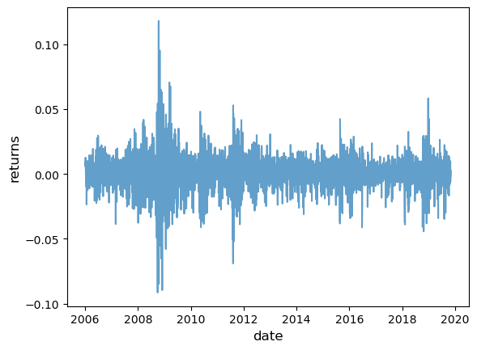
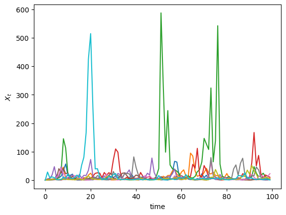
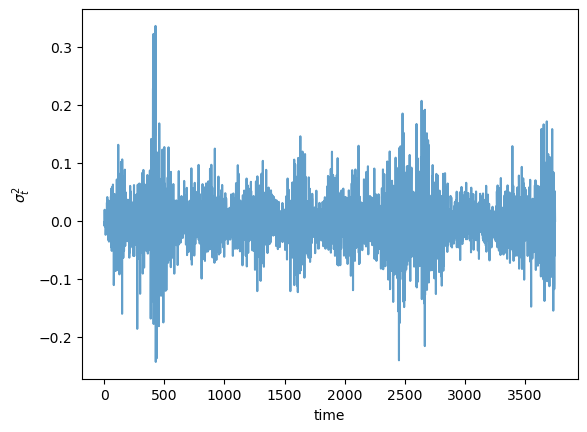
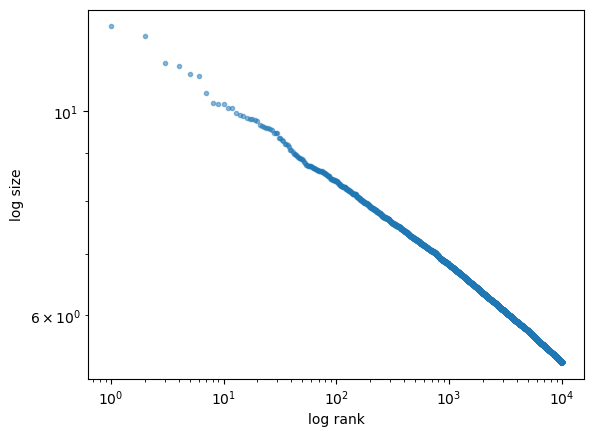

<!DOCTYPE html>


<html lang="en" data-content_root="./" >

  <head>
    <meta charset="utf-8" />
    <meta name="viewport" content="width=device-width, initial-scale=1.0" /><meta name="viewport" content="width=device-width, initial-scale=1" />

    <title>38. Kesten Processes and Firm Dynamics &#8212; Intermediate Quantitative Economics with Python</title>
    <script src="https://unpkg.com/@popperjs/core@2.9.2/dist/umd/popper.min.js"></script>
    <script src="https://unpkg.com/tippy.js@6.3.1/dist/tippy-bundle.umd.js"></script>
    <script src="https://cdn.jsdelivr.net/npm/feather-icons/dist/feather.min.js"></script>
    
        <script>
            MathJax = {
            loader: {load: ['[tex]/boldsymbol', '[tex]/textmacros']},
            tex: {
                packages: {'[+]': ['boldsymbol', 'textmacros']},
                inlineMath: [['$', '$'], ['\\(', '\\)']],
                processEscapes: true,
                macros: {
                    "argmax" : "arg\\,max",
                    "argmin" : "arg\\,min",
                    "col"    : "col",
                    "Span"   :  "span",
                    "epsilon": "\\varepsilon",
                    "EE": "\\mathbb{E}",
                    "PP": "\\mathbb{P}",
                    "RR": "\\mathbb{R}",
                    "NN": "\\mathbb{N}",
                    "ZZ": "\\mathbb{Z}",
                    "aA": "\\mathcal{A}",
                    "bB": "\\mathcal{B}",
                    "cC": "\\mathcal{C}",
                    "dD": "\\mathcal{D}",
                    "eE": "\\mathcal{E}",
                    "fF": "\\mathcal{F}",
                    "gG": "\\mathcal{G}",
                    "hH": "\\mathcal{H}",
                }
            },
            svg: {
                fontCache: 'global',
                scale: 0.92,
                displayAlign: "center",
            },
            };
        </script>
    
    
  
  
  
  <script data-cfasync="false">
    document.documentElement.dataset.mode = localStorage.getItem("mode") || "";
    document.documentElement.dataset.theme = localStorage.getItem("theme") || "";
  </script>
  
  <!-- Loaded before other Sphinx assets -->
  <link href="_static/styles/theme.css?digest=dfe6caa3a7d634c4db9b" rel="stylesheet" />
<link href="_static/styles/bootstrap.css?digest=dfe6caa3a7d634c4db9b" rel="stylesheet" />
<link href="_static/styles/pydata-sphinx-theme.css?digest=dfe6caa3a7d634c4db9b" rel="stylesheet" />

  
  <link href="_static/vendor/fontawesome/6.5.2/css/all.min.css?digest=dfe6caa3a7d634c4db9b" rel="stylesheet" />
  <link rel="preload" as="font" type="font/woff2" crossorigin href="_static/vendor/fontawesome/6.5.2/webfonts/fa-solid-900.woff2" />
<link rel="preload" as="font" type="font/woff2" crossorigin href="_static/vendor/fontawesome/6.5.2/webfonts/fa-brands-400.woff2" />
<link rel="preload" as="font" type="font/woff2" crossorigin href="_static/vendor/fontawesome/6.5.2/webfonts/fa-regular-400.woff2" />

    <link rel="stylesheet" type="text/css" href="_static/pygments.css?v=03e43079" />
    <link rel="stylesheet" href="_static/styles/quantecon-book-theme.css?digest=10af625e9e6eb695015491be7f888e42a03bc430" type="text/css" />
    <link rel="stylesheet" type="text/css" href="_static/togglebutton.css?v=13237357" />
    <link rel="stylesheet" type="text/css" href="_static/copybutton.css?v=76b2166b" />
    <link rel="stylesheet" type="text/css" href="_static/mystnb.8ecb98da25f57f5357bf6f572d296f466b2cfe2517ffebfabe82451661e28f02.css?v=6644e6bb" />
    <link rel="stylesheet" type="text/css" href="_static/sphinx-thebe.css?v=4fa983c6" />
    <link rel="stylesheet" type="text/css" href="_static/exercise.css?v=982b99e0" />
    <link rel="stylesheet" type="text/css" href="_static/proof.css?v=4c010e0d" />
    <link rel="stylesheet" type="text/css" href="_static/sphinx-design.min.css?v=95c83b7e" />
  
  <!-- Pre-loaded scripts that we'll load fully later -->
  <link rel="preload" as="script" href="_static/scripts/bootstrap.js?digest=dfe6caa3a7d634c4db9b" />
<link rel="preload" as="script" href="_static/scripts/pydata-sphinx-theme.js?digest=dfe6caa3a7d634c4db9b" />
  <script src="_static/vendor/fontawesome/6.5.2/js/all.min.js?digest=dfe6caa3a7d634c4db9b"></script>


    <script src="_static/documentation_options.js?v=9eb32ce0"></script>
    <script src="_static/doctools.js?v=9a2dae69"></script>
    <script src="_static/sphinx_highlight.js?v=dc90522c"></script>
    <script src="_static/clipboard.min.js?v=a7894cd8"></script>
    <script src="_static/copybutton.js?v=f281be69"></script>
    <script src="_static/scripts/sphinx-book-theme.js"></script>
    <script>let toggleHintShow = 'Click to show';</script>
    <script>let toggleHintHide = 'Click to hide';</script>
    <script>let toggleOpenOnPrint = 'true';</script>
    <script src="_static/togglebutton.js?v=4a39c7ea"></script>
    <script src="_static/scripts/quantecon-book-theme.js?digest=ceefa0362b71a389a50c4058a117a949b54259bd"></script>
    <script src="_static/scripts/jquery.js?v=5d32c60e"></script>
    <script src="_static/scripts/_sphinx_javascript_frameworks_compat.js?v=2cd50e6c"></script>
    <script>var togglebuttonSelector = '.toggle, .admonition.dropdown';</script>
    <script src="_static/design-tabs.js?v=f930bc37"></script>
    <script async="async" src="https://www.googletagmanager.com/gtag/js?id=G-J0SMYR4SG3"></script>
    <script>
                window.dataLayer = window.dataLayer || [];
                function gtag(){ dataLayer.push(arguments); }
                gtag('js', new Date());
                gtag('config', 'G-J0SMYR4SG3');
            </script>
    <script>const THEBE_JS_URL = "https://unpkg.com/thebe@0.8.2/lib/index.js"; const thebe_selector = ".thebe,.cell"; const thebe_selector_input = "pre"; const thebe_selector_output = ".output, .cell_output"</script>
    <script async="async" src="_static/sphinx-thebe.js?v=c100c467"></script>
    <script>var togglebuttonSelector = '.toggle, .admonition.dropdown';</script>
    <script>
                window.dataLayer = window.dataLayer || [];
                function gtag(){ dataLayer.push(arguments); }
                gtag('js', new Date());
                gtag('config', 'G-J0SMYR4SG3');
            </script>
    <script>const THEBE_JS_URL = "https://unpkg.com/thebe@0.8.2/lib/index.js"; const thebe_selector = ".thebe,.cell"; const thebe_selector_input = "pre"; const thebe_selector_output = ".output, .cell_output"</script>
    <script>window.MathJax = {"tex": {"macros": {"argmax": "arg\\,max", "argmin": "arg\\,min"}}, "options": {"processHtmlClass": "tex2jax_process|mathjax_process|math|output_area"}}</script>
    <script defer="defer" src="https://cdn.jsdelivr.net/npm/mathjax@3/es5/tex-mml-chtml.js"></script>
    <script>DOCUMENTATION_OPTIONS.pagename = 'kesten_processes';</script>
    <link rel="canonical" href="https://python.quantecon.org/kesten_processes.html" />
    <link rel="icon" href="_static/lectures-favicon.ico"/>
    <link rel="index" title="Index" href="genindex.html" />
    <link rel="search" title="Search" href="search.html" />
    <link rel="next" title="39. Wealth Distribution Dynamics" href="wealth_dynamics.html" />
    <link rel="prev" title="37. Samuelson Multiplier-Accelerator" href="samuelson.html" />

<!-- Normal Meta Tags -->
<meta name="author" context="Thomas J. Sargent &amp; John Stachurski" />
<meta name="keywords" content="Python, QuantEcon, Quantitative Economics, Economics, Sloan, Alfred P. Sloan Foundation, Tom J. Sargent, John Stachurski" />
<meta name="description" content=This website presents a set of lectures on quantitative economic modeling, designed and written by Thomas J. Sargent and John Stachurski. />

<!-- Twitter tags -->
<meta name="twitter:card" content="summary" />
<meta name="twitter:site" content="@quantecon" />
<meta name="twitter:title" content="Kesten Processes and Firm Dynamics"/>
<meta name="twitter:description" content="This website presents a set of lectures on quantitative economic modeling, designed and written by Thomas J. Sargent and John Stachurski.">
<meta name="twitter:creator" content="@quantecon">
<meta name="twitter:image" content="https://assets.quantecon.org/img/qe-twitter-logo.png">

<!-- Opengraph tags -->
<meta property="og:title" content="Kesten Processes and Firm Dynamics" />
<meta property="og:type" content="website" />
<meta property="og:url" content="https://python.quantecon.org/kesten_processes.html" />
<meta property="og:image" content="https://assets.quantecon.org/img/qe-og-logo.png" />
<meta property="og:description" content="This website presents a set of lectures on quantitative economic modeling, designed and written by Thomas J. Sargent and John Stachurski." />
<meta property="og:site_name" content="Intermediate Quantitative Economics with Python" />
<meta name="theme-color" content="#ffffff" />

  </head>
<body>

<!-- Override QuantEcon theme colors -->

    <span id="top"></span>

    <div class="qe-wrapper">

        <div class="qe-main">

            <div class="qe-page" id=kesten_processes>

                <div class="qe-page__toc">

                    <div class="inner">

                        
                        <div class="qe-page__toc-header">
                            On this page
                        </div>


                        <nav id="bd-toc-nav" class="qe-page__toc-nav">
                            <ul class="visible nav section-nav flex-column">
<li class="toc-h2 nav-item toc-entry"><a class="reference internal nav-link" href="#overview">38.1. Overview</a></li>
<li class="toc-h2 nav-item toc-entry"><a class="reference internal nav-link" href="#kesten-processes">38.2. Kesten Processes</a><ul class="nav section-nav flex-column">
<li class="toc-h3 nav-item toc-entry"><a class="reference internal nav-link" href="#example-garch-volatility">38.2.1. Example: GARCH Volatility</a></li>
<li class="toc-h3 nav-item toc-entry"><a class="reference internal nav-link" href="#example-wealth-dynamics">38.2.2. Example: Wealth Dynamics</a></li>
<li class="toc-h3 nav-item toc-entry"><a class="reference internal nav-link" href="#stationarity">38.2.3. Stationarity</a></li>
<li class="toc-h3 nav-item toc-entry"><a class="reference internal nav-link" href="#cross-sectional-interpretation">38.2.4. Cross-Sectional Interpretation</a></li>
<li class="toc-h3 nav-item toc-entry"><a class="reference internal nav-link" href="#conditions-for-stationarity">38.2.5. Conditions for Stationarity</a></li>
</ul>
</li>
<li class="toc-h2 nav-item toc-entry"><a class="reference internal nav-link" href="#heavy-tails">38.3. Heavy Tails</a><ul class="nav section-nav flex-column">
<li class="toc-h3 nav-item toc-entry"><a class="reference internal nav-link" href="#the-kestengoldie-theorem">38.3.1. The Kesten–Goldie Theorem</a></li>
<li class="toc-h3 nav-item toc-entry"><a class="reference internal nav-link" href="#intuition">38.3.2. Intuition</a></li>
</ul>
</li>
<li class="toc-h2 nav-item toc-entry"><a class="reference internal nav-link" href="#application-firm-dynamics">38.4. Application: Firm Dynamics</a><ul class="nav section-nav flex-column">
<li class="toc-h3 nav-item toc-entry"><a class="reference internal nav-link" href="#gibrats-law">38.4.1. Gibrat’s Law</a></li>
<li class="toc-h3 nav-item toc-entry"><a class="reference internal nav-link" href="#id11">38.4.2. Heavy Tails</a></li>
</ul>
</li>
<li class="toc-h2 nav-item toc-entry"><a class="reference internal nav-link" href="#exercises">38.5. Exercises</a></li>
</ul>
                            <p class="logo">
                                
                                    
                                    <a href=https://quantecon.org></a>
                                    
                                    
                                
                            </p>

                            <p class="powered">Powered by <a href="https://jupyterbook.org/v1/">Jupyter Book</a></p>

                        </nav>

                        <div class="qe-page__toc-footer">
                            
                            
                            <p><a href="#top"><strong>Back to top</strong></a></p>
                        </div>

                    </div>

                </div>

                <div class="qe-page__header">

                    <div class="qe-page__header-copy">

                        <p class="qe-page__header-heading"><a href="intro.html">Intermediate Quantitative Economics with Python</a></p>

                    </div>

                    <!-- Authors section -->
                        <p class="qe-page__header-authors" font-size="18">
                            
                                
                                    <a href="http://www.tomsargent.com/" target="_blank"><span>Thomas J. Sargent</span></a>
                                
                            
                                
                                    and <a href="https://johnstachurski.net/" target="_blank"><span>John Stachurski</span></a>
                                
                            
                        </p>

                    <!-- Last modified / Changelog dropdown -->
                        <button class="qe-page__header-changed" id="changelog-toggle" aria-expanded="false">
                            Last changed: May 19, 2025
                            <span class="changelog-icon">▼</span>
                        </button>

                    <!-- Changelog dropdown content -->
                    <div class="qe-page__header-changelog" id="changelog-content" aria-hidden="true">
                        <h4>Changelog (<a href="https://github.com/QuantEcon/lecture-python.myst/commits/main/lectures/kesten_processes.md">full history</a>)</h4>
                        <ul class="changelog-list">
                            
                            <li class="changelog-entry">
                                
                                <a href="https://github.com/QuantEcon/lecture-python.myst/commit/b7349e484" class="changelog-hash">b7349e484</a>
                                
                                <span class="changelog-author">Matt McKay</span>
                                <span class="changelog-time">6 months ago</span>
                                <span class="changelog-message">FIX: Deprecation and Future Warnings (#444)</span>
                            </li>
                            
                            <li class="changelog-entry">
                                
                                <a href="https://github.com/QuantEcon/lecture-python.myst/commit/919f9b4cc" class="changelog-hash">919f9b4cc</a>
                                
                                <span class="changelog-author">Matt McKay</span>
                                <span class="changelog-time">8 months ago</span>
                                <span class="changelog-message">MAINT: update docker environment (#445)</span>
                            </li>
                            
                            <li class="changelog-entry">
                                
                                <a href="https://github.com/QuantEcon/lecture-python.myst/commit/f4d7a8d77" class="changelog-hash">f4d7a8d77</a>
                                
                                <span class="changelog-author">Matt McKay</span>
                                <span class="changelog-time">12 months ago</span>
                                <span class="changelog-message">FIX: pass quantecon logo through to download notebooks (#432)</span>
                            </li>
                            
                            <li class="changelog-entry">
                                
                                <a href="https://github.com/QuantEcon/lecture-python.myst/commit/9ec9e13ed" class="changelog-hash">9ec9e13ed</a>
                                
                                <span class="changelog-author">Matt McKay</span>
                                <span class="changelog-time">1 year ago</span>
                                <span class="changelog-message">MAINT: update @jit(nopython=True) to @jit with numba>=0.59 (#395)</span>
                            </li>
                            
                            <li class="changelog-entry">
                                
                                <a href="https://github.com/QuantEcon/lecture-python.myst/commit/8a52b010f" class="changelog-hash">8a52b010f</a>
                                
                                <span class="changelog-author">Humphrey Yang</span>
                                <span class="changelog-time">1 year ago</span>
                                <span class="changelog-message">Remove Migrated Lecture `ar1_processes`  (#385)</span>
                            </li>
                            
                            <li class="changelog-entry">
                                
                                <a href="https://github.com/QuantEcon/lecture-python.myst/commit/dd9fd0199" class="changelog-hash">dd9fd0199</a>
                                
                                <span class="changelog-author">Smit Lunagariya</span>
                                <span class="changelog-time">1 year ago</span>
                                <span class="changelog-message">MAINT: Fix small typos (#362)</span>
                            </li>
                            
                            <li class="changelog-entry">
                                
                                <a href="https://github.com/QuantEcon/lecture-python.myst/commit/bab7a8e95" class="changelog-hash">bab7a8e95</a>
                                
                                <span class="changelog-author">Smit Lunagariya</span>
                                <span class="changelog-time">2 years ago</span>
                                <span class="changelog-message">Remove unused imports (#357)</span>
                            </li>
                            
                            <li class="changelog-entry">
                                
                                <a href="https://github.com/QuantEcon/lecture-python.myst/commit/3e6b2c83a" class="changelog-hash">3e6b2c83a</a>
                                
                                <span class="changelog-author">Humphrey Yang</span>
                                <span class="changelog-time">2 years ago</span>
                                <span class="changelog-message">Remove `heavy_tails` and Add `intersphinx_mapping` to the Intro Series (#349)</span>
                            </li>
                            
                            <li class="changelog-entry">
                                
                                <a href="https://github.com/QuantEcon/lecture-python.myst/commit/fe23f8315" class="changelog-hash">fe23f8315</a>
                                
                                <span class="changelog-author">Humphrey Yang</span>
                                <span class="changelog-time">2 years ago</span>
                                <span class="changelog-message">revert kesten processes</span>
                            </li>
                            
                            <li class="changelog-entry">
                                
                                <a href="https://github.com/QuantEcon/lecture-python.myst/commit/bbbd6b0fd" class="changelog-hash">bbbd6b0fd</a>
                                
                                <span class="changelog-author">Humphrey Yang</span>
                                <span class="changelog-time">2 years ago</span>
                                <span class="changelog-message">update for loop</span>
                            </li>
                            
                        </ul>
                    </div>

                </div> <!-- .page__header -->


                
                <main class="qe-page__content" role="main">
                    
                    <div>
                        
  <section class="tex2jax_ignore mathjax_ignore" id="kesten-processes-and-firm-dynamics">
<h1><a class="toc-backref" href="#id13" role="doc-backlink"><span class="section-number">38. </span>Kesten Processes and Firm Dynamics</a><a class="headerlink" href="#kesten-processes-and-firm-dynamics" title="Link to this heading">#</a></h1>
<nav class="contents" id="contents">
<span id="index-0"></span><p class="topic-title">Contents</p>
<ul class="simple">
<li><p><a class="reference internal" href="#kesten-processes-and-firm-dynamics" id="id13">Kesten Processes and Firm Dynamics</a></p>
<ul>
<li><p><a class="reference internal" href="#overview" id="id14">Overview</a></p></li>
<li><p><a class="reference internal" href="#kesten-processes" id="id15">Kesten Processes</a></p></li>
<li><p><a class="reference internal" href="#heavy-tails" id="id16">Heavy Tails</a></p></li>
<li><p><a class="reference internal" href="#application-firm-dynamics" id="id17">Application: Firm Dynamics</a></p></li>
<li><p><a class="reference internal" href="#exercises" id="id18">Exercises</a></p></li>
</ul>
</li>
</ul>
</nav>
<p>In addition to what’s in Anaconda, this lecture will need the following libraries:</p>
<div class="cell tag_hide-output docutils container">
<div class="cell_input above-output-prompt docutils container">
<div class="highlight-ipython3 notranslate"><div class="highlight"><pre><span></span><span class="o">!</span>pip<span class="w"> </span>install<span class="w"> </span>quantecon
<span class="o">!</span>pip<span class="w"> </span>install<span class="w"> </span>--upgrade<span class="w"> </span>yfinance
</pre></div>
</div>
</div>
<details class="admonition hide below-input">
<summary aria-label="Toggle hidden content">
<p class="collapsed admonition-title">Show code cell output</p>
<p class="expanded admonition-title">Hide code cell output</p>
</summary>
<div class="cell_output docutils container">
<div class="output stream highlight-myst-ansi notranslate"><div class="highlight"><pre><span></span>Requirement already satisfied: quantecon in /home/runner/miniconda3/envs/quantecon/lib/python3.13/site-packages (0.10.1)
Requirement already satisfied: numba&gt;=0.49.0 in /home/runner/miniconda3/envs/quantecon/lib/python3.13/site-packages (from quantecon) (0.61.0)
Requirement already satisfied: numpy&gt;=1.17.0 in /home/runner/miniconda3/envs/quantecon/lib/python3.13/site-packages (from quantecon) (2.1.3)
Requirement already satisfied: requests in /home/runner/miniconda3/envs/quantecon/lib/python3.13/site-packages (from quantecon) (2.32.3)
Requirement already satisfied: scipy&gt;=1.5.0 in /home/runner/miniconda3/envs/quantecon/lib/python3.13/site-packages (from quantecon) (1.15.3)
Requirement already satisfied: sympy in /home/runner/miniconda3/envs/quantecon/lib/python3.13/site-packages (from quantecon) (1.13.3)
Requirement already satisfied: llvmlite&lt;0.45,&gt;=0.44.0dev0 in /home/runner/miniconda3/envs/quantecon/lib/python3.13/site-packages (from numba&gt;=0.49.0-&gt;quantecon) (0.44.0)
Requirement already satisfied: charset-normalizer&lt;4,&gt;=2 in /home/runner/miniconda3/envs/quantecon/lib/python3.13/site-packages (from requests-&gt;quantecon) (3.3.2)
Requirement already satisfied: idna&lt;4,&gt;=2.5 in /home/runner/miniconda3/envs/quantecon/lib/python3.13/site-packages (from requests-&gt;quantecon) (3.7)
Requirement already satisfied: urllib3&lt;3,&gt;=1.21.1 in /home/runner/miniconda3/envs/quantecon/lib/python3.13/site-packages (from requests-&gt;quantecon) (2.3.0)
Requirement already satisfied: certifi&gt;=2017.4.17 in /home/runner/miniconda3/envs/quantecon/lib/python3.13/site-packages (from requests-&gt;quantecon) (2025.4.26)
Requirement already satisfied: mpmath&lt;1.4,&gt;=1.1.0 in /home/runner/miniconda3/envs/quantecon/lib/python3.13/site-packages (from sympy-&gt;quantecon) (1.3.0)
Collecting yfinance
  Downloading yfinance-0.2.66-py2.py3-none-any.whl.metadata (6.0 kB)
Requirement already satisfied: pandas&gt;=1.3.0 in /home/runner/miniconda3/envs/quantecon/lib/python3.13/site-packages (from yfinance) (2.2.3)
Requirement already satisfied: numpy&gt;=1.16.5 in /home/runner/miniconda3/envs/quantecon/lib/python3.13/site-packages (from yfinance) (2.1.3)
Requirement already satisfied: requests&gt;=2.31 in /home/runner/miniconda3/envs/quantecon/lib/python3.13/site-packages (from yfinance) (2.32.3)
Collecting multitasking&gt;=0.0.7 (from yfinance)
  Downloading multitasking-0.0.12.tar.gz (19 kB)
  Preparing metadata (setup.py) ... ?25l-
 done
?25hRequirement already satisfied: platformdirs&gt;=2.0.0 in /home/runner/miniconda3/envs/quantecon/lib/python3.13/site-packages (from yfinance) (4.3.7)
Requirement already satisfied: pytz&gt;=2022.5 in /home/runner/miniconda3/envs/quantecon/lib/python3.13/site-packages (from yfinance) (2024.1)
Collecting frozendict&gt;=2.3.4 (from yfinance)
  Downloading frozendict-2.4.7-py3-none-any.whl.metadata (23 kB)
Collecting peewee&gt;=3.16.2 (from yfinance)
  Downloading peewee-3.18.3.tar.gz (3.0 MB)
?25l     ━━━━━━━━━━━━━━━━━━━━━━━━━━━━━━━━━━━━━━━━ <span class=" -Color -Color-Green">0.0/3.0 MB</span> <span class=" -Color -Color-Red">?</span> eta <span class=" -Color -Color-Cyan">-:--:--</span>
     ━━━━━━━━━━━━━━━━━━━━━━━━━━━━━━━━━━━━━━━━ <span class=" -Color -Color-Green">3.0/3.0 MB</span> <span class=" -Color -Color-Red">67.2 MB/s</span> eta <span class=" -Color -Color-Cyan">0:00:00</span>
?25h
  Installing build dependencies ... ?25l-
 \
 |
 done
?25h  Getting requirements to build wheel ... ?25l-
 done
?25h  Preparing metadata (pyproject.toml) ... ?25l-
 done
?25hRequirement already satisfied: beautifulsoup4&gt;=4.11.1 in /home/runner/miniconda3/envs/quantecon/lib/python3.13/site-packages (from yfinance) (4.12.3)
Collecting curl_cffi&gt;=0.7 (from yfinance)
  Downloading curl_cffi-0.13.0-cp39-abi3-manylinux_2_17_x86_64.manylinux2014_x86_64.whl.metadata (13 kB)
Requirement already satisfied: protobuf&gt;=3.19.0 in /home/runner/miniconda3/envs/quantecon/lib/python3.13/site-packages (from yfinance) (5.29.3)
Collecting websockets&gt;=13.0 (from yfinance)
  Downloading websockets-15.0.1-cp313-cp313-manylinux_2_5_x86_64.manylinux1_x86_64.manylinux_2_17_x86_64.manylinux2014_x86_64.whl.metadata (6.8 kB)
Requirement already satisfied: soupsieve&gt;1.2 in /home/runner/miniconda3/envs/quantecon/lib/python3.13/site-packages (from beautifulsoup4&gt;=4.11.1-&gt;yfinance) (2.5)
Requirement already satisfied: cffi&gt;=1.12.0 in /home/runner/miniconda3/envs/quantecon/lib/python3.13/site-packages (from curl_cffi&gt;=0.7-&gt;yfinance) (1.17.1)
Requirement already satisfied: certifi&gt;=2024.2.2 in /home/runner/miniconda3/envs/quantecon/lib/python3.13/site-packages (from curl_cffi&gt;=0.7-&gt;yfinance) (2025.4.26)
Requirement already satisfied: pycparser in /home/runner/miniconda3/envs/quantecon/lib/python3.13/site-packages (from cffi&gt;=1.12.0-&gt;curl_cffi&gt;=0.7-&gt;yfinance) (2.21)
Requirement already satisfied: python-dateutil&gt;=2.8.2 in /home/runner/miniconda3/envs/quantecon/lib/python3.13/site-packages (from pandas&gt;=1.3.0-&gt;yfinance) (2.9.0.post0)
Requirement already satisfied: tzdata&gt;=2022.7 in /home/runner/miniconda3/envs/quantecon/lib/python3.13/site-packages (from pandas&gt;=1.3.0-&gt;yfinance) (2025.2)
Requirement already satisfied: six&gt;=1.5 in /home/runner/miniconda3/envs/quantecon/lib/python3.13/site-packages (from python-dateutil&gt;=2.8.2-&gt;pandas&gt;=1.3.0-&gt;yfinance) (1.17.0)
Requirement already satisfied: charset-normalizer&lt;4,&gt;=2 in /home/runner/miniconda3/envs/quantecon/lib/python3.13/site-packages (from requests&gt;=2.31-&gt;yfinance) (3.3.2)
Requirement already satisfied: idna&lt;4,&gt;=2.5 in /home/runner/miniconda3/envs/quantecon/lib/python3.13/site-packages (from requests&gt;=2.31-&gt;yfinance) (3.7)
Requirement already satisfied: urllib3&lt;3,&gt;=1.21.1 in /home/runner/miniconda3/envs/quantecon/lib/python3.13/site-packages (from requests&gt;=2.31-&gt;yfinance) (2.3.0)
Downloading yfinance-0.2.66-py2.py3-none-any.whl (123 kB)
Downloading curl_cffi-0.13.0-cp39-abi3-manylinux_2_17_x86_64.manylinux2014_x86_64.whl (8.3 MB)
?25l   ━━━━━━━━━━━━━━━━━━━━━━━━━━━━━━━━━━━━━━━━ <span class=" -Color -Color-Green">0.0/8.3 MB</span> <span class=" -Color -Color-Red">?</span> eta <span class=" -Color -Color-Cyan">-:--:--</span>
   ━━━━━━━━━━━━━━━━━━━━━━━━━━━━━━━━━━━━━━━━ <span class=" -Color -Color-Green">8.3/8.3 MB</span> <span class=" -Color -Color-Red">115.0 MB/s</span> eta <span class=" -Color -Color-Cyan">0:00:00</span>
?25h
Downloading frozendict-2.4.7-py3-none-any.whl (16 kB)
Downloading websockets-15.0.1-cp313-cp313-manylinux_2_5_x86_64.manylinux1_x86_64.manylinux_2_17_x86_64.manylinux2014_x86_64.whl (182 kB)
Building wheels for collected packages: multitasking, peewee
<span class=" -Color -Color-Yellow">  DEPRECATION: Building &#39;multitasking&#39; using the legacy setup.py bdist_wheel mechanism, which will be removed in a future version. pip 25.3 will enforce this behaviour change. A possible replacement is to use the standardized build interface by setting the `--use-pep517` option, (possibly combined with `--no-build-isolation`), or adding a `pyproject.toml` file to the source tree of &#39;multitasking&#39;. Discussion can be found at https://github.com/pypa/pip/issues/6334</span>

  Building wheel for multitasking (setup.py) ... ?25l-
 \
 |
 done
?25h  Created wheel for multitasking: filename=multitasking-0.0.12-py3-none-any.whl size=15548 sha256=95111e098eb61565447f7a45bbd4b28976ac729ad4b6fb58772c90d9c8c6dfd2
  Stored in directory: /home/runner/.cache/pip/wheels/1e/df/0f/e2bbb22d689b30c681feb5410ab64a2523437b34c8ecfc6476
  Building wheel for peewee (pyproject.toml) ... ?25l-
 \
 |
 /
 done
?25h  Created wheel for peewee: filename=peewee-3.18.3-cp313-cp313-linux_x86_64.whl size=302195 sha256=e6f144f1ae3c82002475a64c4175235f94f5852ba534162230e224f9e9a1e3ab
  Stored in directory: /home/runner/.cache/pip/wheels/8c/a9/a4/df972cd49f865ffde174d9c5b26f14f08f8a363ed31e10ff91
Successfully built multitasking peewee
Installing collected packages: peewee, multitasking, websockets, frozendict, curl_cffi, yfinance
?25l
   ━━━━━━╸━━━━━━━━━━━━━━━━━━━━━━━━━━━━━━━━━ <span class=" -Color -Color-Green">1/6</span> [multitasking]
   ━━━━━━━━━━━━━━━━━━━━━━━━━━╸━━━━━━━━━━━━━ <span class=" -Color -Color-Green">4/6</span> [curl_cffi]
   ━━━━━━━━━━━━━━━━━━━━━━━━━━━━━━━━━╺━━━━━━ <span class=" -Color -Color-Green">5/6</span> [yfinance]
   ━━━━━━━━━━━━━━━━━━━━━━━━━━━━━━━━━━━━━━━━ <span class=" -Color -Color-Green">6/6</span> [yfinance]

Successfully installed curl_cffi-0.13.0 frozendict-2.4.7 multitasking-0.0.12 peewee-3.18.3 websockets-15.0.1 yfinance-0.2.66
</pre></div>
</div>
</div>
</details>
</div>
<section id="overview">
<h2><a class="toc-backref" href="#id14" role="doc-backlink"><span class="section-number">38.1. </span>Overview</a><a class="headerlink" href="#overview" title="Link to this heading">#</a></h2>
<p><a class="reference external" href="https://intro.quantecon.org/ar1_processes.html" title="(in Project name not set)"><span class="xref std std-doc">Previously</span></a> we learned about linear scalar-valued stochastic processes (AR(1) models).</p>
<p>Now we generalize these linear models slightly by allowing the multiplicative coefficient to be stochastic.</p>
<p>Such processes are known as Kesten processes after German–American mathematician Harry Kesten (1931–2019)</p>
<p>Although simple to write down, Kesten processes are interesting for at least two reasons:</p>
<ol class="arabic simple">
<li><p>A number of significant economic processes are or can be described as Kesten processes.</p></li>
<li><p>Kesten processes generate interesting dynamics, including, in some cases, heavy-tailed cross-sectional distributions.</p></li>
</ol>
<p>We will discuss these issues as we go along.</p>
<p>Let’s start with some imports:</p>
<div class="cell docutils container">
<div class="cell_input docutils container">
<div class="highlight-ipython3 notranslate"><div class="highlight"><pre><span></span><span class="kn">import</span><span class="w"> </span><span class="nn">matplotlib.pyplot</span><span class="w"> </span><span class="k">as</span><span class="w"> </span><span class="nn">plt</span>
<span class="kn">import</span><span class="w"> </span><span class="nn">numpy</span><span class="w"> </span><span class="k">as</span><span class="w"> </span><span class="nn">np</span>
<span class="kn">import</span><span class="w"> </span><span class="nn">quantecon</span><span class="w"> </span><span class="k">as</span><span class="w"> </span><span class="nn">qe</span>
</pre></div>
</div>
</div>
</div>
<p>The following two lines are only added to avoid a <code class="docutils literal notranslate"><span class="pre">FutureWarning</span></code> caused by
compatibility issues between pandas and matplotlib.</p>
<div class="cell docutils container">
<div class="cell_input docutils container">
<div class="highlight-ipython3 notranslate"><div class="highlight"><pre><span></span><span class="kn">from</span><span class="w"> </span><span class="nn">pandas.plotting</span><span class="w"> </span><span class="kn">import</span> <span class="n">register_matplotlib_converters</span>
<span class="n">register_matplotlib_converters</span><span class="p">()</span>
</pre></div>
</div>
</div>
</div>
<p>Additional technical background related to this lecture can be found in the
monograph of <span id="id1">[<a class="reference internal" href="zreferences.html#id72" title="Dariusz Buraczewski, Ewa Damek, Thomas Mikosch, and others. Stochastic models with power-law tails. Springer, 2016.">Buraczewski <em>et al.</em>, 2016</a>]</span>.</p>
</section>
<section id="kesten-processes">
<h2><a class="toc-backref" href="#id15" role="doc-backlink"><span class="section-number">38.2. </span>Kesten Processes</a><a class="headerlink" href="#kesten-processes" title="Link to this heading">#</a></h2>
<p id="index-1">A <strong>Kesten process</strong> is a stochastic process of the form</p>
<div class="math notranslate nohighlight" id="equation-kesproc">
<span class="eqno">(38.1)<a class="headerlink" href="#equation-kesproc" title="Link to this equation">#</a></span>\[X_{t+1} = a_{t+1} X_t + \eta_{t+1}\]</div>
<p>where <span class="math notranslate nohighlight">\(\{a_t\}_{t \geq 1}\)</span> and <span class="math notranslate nohighlight">\(\{\eta_t\}_{t \geq 1}\)</span> are IID
sequences.</p>
<p>We are interested in the dynamics of <span class="math notranslate nohighlight">\(\{X_t\}_{t \geq 0}\)</span> when <span class="math notranslate nohighlight">\(X_0\)</span> is given.</p>
<p>We will focus on the nonnegative scalar case, where <span class="math notranslate nohighlight">\(X_t\)</span> takes values in <span class="math notranslate nohighlight">\(\mathbb R_+\)</span>.</p>
<p>In particular, we will assume that</p>
<ul class="simple">
<li><p>the initial condition <span class="math notranslate nohighlight">\(X_0\)</span> is nonnegative,</p></li>
<li><p><span class="math notranslate nohighlight">\(\{a_t\}_{t \geq 1}\)</span> is a nonnegative IID stochastic process and</p></li>
<li><p><span class="math notranslate nohighlight">\(\{\eta_t\}_{t \geq 1}\)</span> is another nonnegative IID stochastic process, independent of the first.</p></li>
</ul>
<section id="example-garch-volatility">
<h3><span class="section-number">38.2.1. </span>Example: GARCH Volatility<a class="headerlink" href="#example-garch-volatility" title="Link to this heading">#</a></h3>
<p>The GARCH model is common in financial applications, where time series such as asset returns exhibit time varying volatility.</p>
<p>For example, consider the following plot of daily returns on the Nasdaq
Composite Index for the period 1st January 2006 to 1st November 2019.</p>
<div class="cell docutils container" id="ndcode">
<div class="cell_input docutils container">
<div class="highlight-ipython3 notranslate"><div class="highlight"><pre><span></span><span class="kn">import</span><span class="w"> </span><span class="nn">yfinance</span><span class="w"> </span><span class="k">as</span><span class="w"> </span><span class="nn">yf</span>

<span class="n">s</span> <span class="o">=</span> <span class="n">yf</span><span class="o">.</span><span class="n">download</span><span class="p">(</span><span class="s1">&#39;^IXIC&#39;</span><span class="p">,</span> <span class="s1">&#39;2006-1-1&#39;</span><span class="p">,</span> <span class="s1">&#39;2019-11-1&#39;</span><span class="p">,</span> <span class="n">auto_adjust</span><span class="o">=</span><span class="kc">False</span><span class="p">)[</span><span class="s1">&#39;Adj Close&#39;</span><span class="p">]</span>

<span class="n">r</span> <span class="o">=</span> <span class="n">s</span><span class="o">.</span><span class="n">pct_change</span><span class="p">()</span>

<span class="n">fig</span><span class="p">,</span> <span class="n">ax</span> <span class="o">=</span> <span class="n">plt</span><span class="o">.</span><span class="n">subplots</span><span class="p">()</span>

<span class="n">ax</span><span class="o">.</span><span class="n">plot</span><span class="p">(</span><span class="n">r</span><span class="p">,</span> <span class="n">alpha</span><span class="o">=</span><span class="mf">0.7</span><span class="p">)</span>

<span class="n">ax</span><span class="o">.</span><span class="n">set_ylabel</span><span class="p">(</span><span class="s1">&#39;returns&#39;</span><span class="p">,</span> <span class="n">fontsize</span><span class="o">=</span><span class="mi">12</span><span class="p">)</span>
<span class="n">ax</span><span class="o">.</span><span class="n">set_xlabel</span><span class="p">(</span><span class="s1">&#39;date&#39;</span><span class="p">,</span> <span class="n">fontsize</span><span class="o">=</span><span class="mi">12</span><span class="p">)</span>

<span class="n">plt</span><span class="o">.</span><span class="n">show</span><span class="p">()</span>
</pre></div>
</div>
</div>
<div class="cell_output docutils container">
<div class="output stderr highlight-myst-ansi notranslate"><div class="highlight"><pre><span></span>[*********************100%***********************]  1 of 1 completed
</pre></div>
</div>

</div>
</div>
<p>Notice how the series exhibits bursts of volatility (high variance) and then
settles down again.</p>
<p>GARCH models can replicate this feature.</p>
<p>The GARCH(1, 1) volatility process takes the form</p>
<div class="math notranslate nohighlight" id="equation-garch11v">
<span class="eqno">(38.2)<a class="headerlink" href="#equation-garch11v" title="Link to this equation">#</a></span>\[\sigma_{t+1}^2 = \alpha_0 + \sigma_t^2 (\alpha_1 \xi_{t+1}^2 + \beta)\]</div>
<p>where <span class="math notranslate nohighlight">\(\{\xi_t\}\)</span> is IID with <span class="math notranslate nohighlight">\(\mathbb E \xi_t^2 = 1\)</span> and all parameters are positive.</p>
<p>Returns on a given asset are then modeled as</p>
<div class="math notranslate nohighlight" id="equation-garch11r">
<span class="eqno">(38.3)<a class="headerlink" href="#equation-garch11r" title="Link to this equation">#</a></span>\[r_t = \sigma_t \zeta_t\]</div>
<p>where <span class="math notranslate nohighlight">\(\{\zeta_t\}\)</span> is again IID and independent of <span class="math notranslate nohighlight">\(\{\xi_t\}\)</span>.</p>
<p>The volatility sequence <span class="math notranslate nohighlight">\(\{\sigma_t^2 \}\)</span>, which drives the dynamics of returns, is a Kesten process.</p>
</section>
<section id="example-wealth-dynamics">
<h3><span class="section-number">38.2.2. </span>Example: Wealth Dynamics<a class="headerlink" href="#example-wealth-dynamics" title="Link to this heading">#</a></h3>
<p>Suppose that a given household saves a fixed fraction <span class="math notranslate nohighlight">\(s\)</span> of its current wealth in every period.</p>
<p>The household earns labor income <span class="math notranslate nohighlight">\(y_t\)</span> at the start of time <span class="math notranslate nohighlight">\(t\)</span>.</p>
<p>Wealth then evolves according to</p>
<div class="math notranslate nohighlight" id="equation-wealth-dynam">
<span class="eqno">(38.4)<a class="headerlink" href="#equation-wealth-dynam" title="Link to this equation">#</a></span>\[w_{t+1} = R_{t+1} s w_t  + y_{t+1}\]</div>
<p>where <span class="math notranslate nohighlight">\(\{R_t\}\)</span> is the gross rate of return on assets.</p>
<p>If <span class="math notranslate nohighlight">\(\{R_t\}\)</span> and <span class="math notranslate nohighlight">\(\{y_t\}\)</span> are both IID, then <a class="reference internal" href="#equation-wealth-dynam">(38.4)</a>
is a Kesten process.</p>
</section>
<section id="stationarity">
<h3><span class="section-number">38.2.3. </span>Stationarity<a class="headerlink" href="#stationarity" title="Link to this heading">#</a></h3>
<p>In earlier lectures, such as the one on <a class="reference external" href="https://intro.quantecon.org/ar1_processes.html" title="(in Project name not set)"><span class="xref std std-doc">AR(1) processes</span></a>, we introduced the notion of a stationary distribution.</p>
<p>In the present context, we can define a stationary distribution as follows:</p>
<p>The distribution <span class="math notranslate nohighlight">\(F^*\)</span> on <span class="math notranslate nohighlight">\(\mathbb R\)</span> is called <strong>stationary</strong> for the
Kesten process <a class="reference internal" href="#equation-kesproc">(38.1)</a> if</p>
<div class="math notranslate nohighlight" id="equation-kp-stationary0">
<span class="eqno">(38.5)<a class="headerlink" href="#equation-kp-stationary0" title="Link to this equation">#</a></span>\[X_t \sim F^*
\quad \implies \quad
a_{t+1} X_t + \eta_{t+1} \sim F^*\]</div>
<p>In other words, if the current state <span class="math notranslate nohighlight">\(X_t\)</span> has distribution <span class="math notranslate nohighlight">\(F^*\)</span>,
then so does the next period state <span class="math notranslate nohighlight">\(X_{t+1}\)</span>.</p>
<p>We can write this alternatively as</p>
<div class="math notranslate nohighlight" id="equation-kp-stationary">
<span class="eqno">(38.6)<a class="headerlink" href="#equation-kp-stationary" title="Link to this equation">#</a></span>\[F^*(y) = \int \mathbb P\{ a_{t+1} x + \eta_{t+1} \leq y\} F^*(dx)
\quad \text{for all } y \geq 0.\]</div>
<p>The left hand side is the distribution of the next period state when the
current state is drawn from <span class="math notranslate nohighlight">\(F^*\)</span>.</p>
<p>The equality in <a class="reference internal" href="#equation-kp-stationary">(38.6)</a> states that this distribution is unchanged.</p>
</section>
<section id="cross-sectional-interpretation">
<h3><span class="section-number">38.2.4. </span>Cross-Sectional Interpretation<a class="headerlink" href="#cross-sectional-interpretation" title="Link to this heading">#</a></h3>
<p>There is an important cross-sectional interpretation of stationary distributions, discussed previously but worth repeating here.</p>
<p>Suppose, for example, that we are interested in the wealth distribution — that is, the current distribution of wealth across households in a given country.</p>
<p>Suppose further that</p>
<ul class="simple">
<li><p>the wealth of each household evolves independently according to
<a class="reference internal" href="#equation-wealth-dynam">(38.4)</a>,</p></li>
<li><p><span class="math notranslate nohighlight">\(F^*\)</span> is a stationary distribution for this stochastic process and</p></li>
<li><p>there are many households.</p></li>
</ul>
<p>Then <span class="math notranslate nohighlight">\(F^*\)</span> is a steady state for the cross-sectional wealth distribution in this country.</p>
<p>In other words, if <span class="math notranslate nohighlight">\(F^*\)</span> is the current wealth distribution then it will
remain so in subsequent periods, <em>ceteris paribus</em>.</p>
<p>To see this, suppose that <span class="math notranslate nohighlight">\(F^*\)</span> is the current wealth distribution.</p>
<p>What is the fraction of households with wealth less than <span class="math notranslate nohighlight">\(y\)</span> next
period?</p>
<p>To obtain this, we sum the probability that wealth is less than <span class="math notranslate nohighlight">\(y\)</span> tomorrow, given that current wealth is <span class="math notranslate nohighlight">\(w\)</span>, weighted by the fraction of households with wealth <span class="math notranslate nohighlight">\(w\)</span>.</p>
<p>Noting that the fraction of households with wealth in interval <span class="math notranslate nohighlight">\(dw\)</span> is <span class="math notranslate nohighlight">\(F^*(dw)\)</span>, we get</p>
<div class="math notranslate nohighlight">
\[
\int \mathbb P\{ R_{t+1} s w  + y_{t+1} \leq y\} F^*(dw)
\]</div>
<p>By the definition of stationarity and the assumption that <span class="math notranslate nohighlight">\(F^*\)</span> is stationary for the wealth process, this is just <span class="math notranslate nohighlight">\(F^*(y)\)</span>.</p>
<p>Hence the fraction of households with wealth in <span class="math notranslate nohighlight">\([0, y]\)</span> is the same
next period as it is this period.</p>
<p>Since <span class="math notranslate nohighlight">\(y\)</span> was chosen arbitrarily, the distribution is unchanged.</p>
</section>
<section id="conditions-for-stationarity">
<h3><span class="section-number">38.2.5. </span>Conditions for Stationarity<a class="headerlink" href="#conditions-for-stationarity" title="Link to this heading">#</a></h3>
<p>The Kesten process <span class="math notranslate nohighlight">\(X_{t+1} = a_{t+1} X_t + \eta_{t+1}\)</span> does not always
have a stationary distribution.</p>
<p>For example, if <span class="math notranslate nohighlight">\(a_t \equiv \eta_t \equiv 1\)</span> for all <span class="math notranslate nohighlight">\(t\)</span>, then
<span class="math notranslate nohighlight">\(X_t = X_0 + t\)</span>, which diverges to infinity.</p>
<p>To prevent this kind of divergence, we require that <span class="math notranslate nohighlight">\(\{a_t\}\)</span> is
strictly less than 1 most of the time.</p>
<p>In particular, if</p>
<div class="math notranslate nohighlight" id="equation-kp-stat-cond">
<span class="eqno">(38.7)<a class="headerlink" href="#equation-kp-stat-cond" title="Link to this equation">#</a></span>\[\mathbb E \ln a_t &lt; 0
\quad \text{and} \quad
\mathbb E \eta_t &lt; \infty\]</div>
<p>then a unique stationary distribution exists on <span class="math notranslate nohighlight">\(\mathbb R_+\)</span>.</p>
<ul class="simple">
<li><p>See, for example, theorem 2.1.3 of <span id="id2">[<a class="reference internal" href="zreferences.html#id72" title="Dariusz Buraczewski, Ewa Damek, Thomas Mikosch, and others. Stochastic models with power-law tails. Springer, 2016.">Buraczewski <em>et al.</em>, 2016</a>]</span>, which provides slightly weaker conditions.</p></li>
</ul>
<p>As one application of this result, we see that the wealth process
<a class="reference internal" href="#equation-wealth-dynam">(38.4)</a> will have a unique stationary distribution whenever
labor income has finite mean and <span class="math notranslate nohighlight">\(\mathbb E \ln R_t  + \ln s &lt; 0\)</span>.</p>
</section>
</section>
<section id="heavy-tails">
<h2><a class="toc-backref" href="#id16" role="doc-backlink"><span class="section-number">38.3. </span>Heavy Tails</a><a class="headerlink" href="#heavy-tails" title="Link to this heading">#</a></h2>
<p>Under certain conditions, the stationary distribution of a Kesten process has
a Pareto tail.</p>
<p>(See our <a class="reference external" href="https://intro.quantecon.org/heavy_tails.html" title="(in Project name not set)"><span class="xref std std-doc">earlier lecture</span></a>  on heavy-tailed distributions for background.)</p>
<p>This fact is significant for economics because of the prevalence of Pareto-tailed distributions.</p>
<section id="the-kestengoldie-theorem">
<h3><span class="section-number">38.3.1. </span>The Kesten–Goldie Theorem<a class="headerlink" href="#the-kestengoldie-theorem" title="Link to this heading">#</a></h3>
<p>To state the conditions under which the stationary distribution of a Kesten process has a Pareto tail, we first recall that a random variable is called <strong>nonarithmetic</strong> if its distribution is not concentrated on <span class="math notranslate nohighlight">\(\{\dots, -2t, -t, 0, t, 2t, \ldots \}\)</span> for any <span class="math notranslate nohighlight">\(t \geq 0\)</span>.</p>
<p>For example, any random variable with a density is nonarithmetic.</p>
<p>The famous Kesten–Goldie Theorem (see, e.g., <span id="id3">[<a class="reference internal" href="zreferences.html#id72" title="Dariusz Buraczewski, Ewa Damek, Thomas Mikosch, and others. Stochastic models with power-law tails. Springer, 2016.">Buraczewski <em>et al.</em>, 2016</a>]</span>, theorem 2.4.4) states that if</p>
<ol class="arabic simple">
<li><p>the stationarity conditions in <a class="reference internal" href="#equation-kp-stat-cond">(38.7)</a> hold,</p></li>
<li><p>the random variable <span class="math notranslate nohighlight">\(a_t\)</span> is positive with probability one and nonarithmetic,</p></li>
<li><p><span class="math notranslate nohighlight">\(\mathbb P\{a_t x + \eta_t = x\} &lt; 1\)</span> for all <span class="math notranslate nohighlight">\(x \in \mathbb R_+\)</span> and</p></li>
<li><p>there exists a positive constant <span class="math notranslate nohighlight">\(\alpha\)</span> such that</p></li>
</ol>
<div class="math notranslate nohighlight">
\[
\mathbb E a_t^\alpha = 1,
    \quad
\mathbb E \eta_t^\alpha &lt; \infty,
    \quad \text{and} \quad
\mathbb E [a_t^{\alpha+1} ] &lt; \infty
\]</div>
<p>then the stationary distribution of the Kesten process has a Pareto tail with
tail index <span class="math notranslate nohighlight">\(\alpha\)</span>.</p>
<p>More precisely, if <span class="math notranslate nohighlight">\(F^*\)</span> is the unique stationary distribution and <span class="math notranslate nohighlight">\(X^* \sim F^*\)</span>, then</p>
<div class="math notranslate nohighlight">
\[
\lim_{x \to \infty} x^\alpha \mathbb P\{X^* &gt; x\} = c
\]</div>
<p>for some positive constant <span class="math notranslate nohighlight">\(c\)</span>.</p>
</section>
<section id="intuition">
<h3><span class="section-number">38.3.2. </span>Intuition<a class="headerlink" href="#intuition" title="Link to this heading">#</a></h3>
<p>Later we will illustrate the Kesten–Goldie Theorem using rank-size plots.</p>
<p>Prior to doing so, we can give the following intuition for the conditions.</p>
<p>Two important conditions are that <span class="math notranslate nohighlight">\(\mathbb E \ln a_t &lt; 0\)</span>, so the model
is stationary, and <span class="math notranslate nohighlight">\(\mathbb E a_t^\alpha = 1\)</span> for some <span class="math notranslate nohighlight">\(\alpha &gt;
0\)</span>.</p>
<p>The first condition implies that the distribution of <span class="math notranslate nohighlight">\(a_t\)</span> has a large amount of probability mass below 1.</p>
<p>The second condition implies that the distribution of <span class="math notranslate nohighlight">\(a_t\)</span> has at least some probability mass at or above 1.</p>
<p>The first condition gives us existence of the stationary condition.</p>
<p>The second condition means that the current state can be expanded by <span class="math notranslate nohighlight">\(a_t\)</span>.</p>
<p>If this occurs for several concurrent periods, the effects compound each other, since <span class="math notranslate nohighlight">\(a_t\)</span> is multiplicative.</p>
<p>This leads to spikes in the time series, which fill out the extreme right hand tail of the distribution.</p>
<p>The spikes in the time series are visible in the following simulation, which generates of 10 paths when <span class="math notranslate nohighlight">\(a_t\)</span> and <span class="math notranslate nohighlight">\(b_t\)</span> are lognormal.</p>
<div class="cell docutils container">
<div class="cell_input docutils container">
<div class="highlight-ipython3 notranslate"><div class="highlight"><pre><span></span><span class="n">μ</span> <span class="o">=</span> <span class="o">-</span><span class="mf">0.5</span>
<span class="n">σ</span> <span class="o">=</span> <span class="mf">1.0</span>

<span class="k">def</span><span class="w"> </span><span class="nf">kesten_ts</span><span class="p">(</span><span class="n">ts_length</span><span class="o">=</span><span class="mi">100</span><span class="p">):</span>
    <span class="n">x</span> <span class="o">=</span> <span class="n">np</span><span class="o">.</span><span class="n">zeros</span><span class="p">(</span><span class="n">ts_length</span><span class="p">)</span>
    <span class="k">for</span> <span class="n">t</span> <span class="ow">in</span> <span class="nb">range</span><span class="p">(</span><span class="n">ts_length</span><span class="o">-</span><span class="mi">1</span><span class="p">):</span>
        <span class="n">a</span> <span class="o">=</span> <span class="n">np</span><span class="o">.</span><span class="n">exp</span><span class="p">(</span><span class="n">μ</span> <span class="o">+</span> <span class="n">σ</span> <span class="o">*</span> <span class="n">np</span><span class="o">.</span><span class="n">random</span><span class="o">.</span><span class="n">randn</span><span class="p">())</span>
        <span class="n">b</span> <span class="o">=</span> <span class="n">np</span><span class="o">.</span><span class="n">exp</span><span class="p">(</span><span class="n">np</span><span class="o">.</span><span class="n">random</span><span class="o">.</span><span class="n">randn</span><span class="p">())</span>
        <span class="n">x</span><span class="p">[</span><span class="n">t</span><span class="o">+</span><span class="mi">1</span><span class="p">]</span> <span class="o">=</span> <span class="n">a</span> <span class="o">*</span> <span class="n">x</span><span class="p">[</span><span class="n">t</span><span class="p">]</span> <span class="o">+</span> <span class="n">b</span>
    <span class="k">return</span> <span class="n">x</span>

<span class="n">fig</span><span class="p">,</span> <span class="n">ax</span> <span class="o">=</span> <span class="n">plt</span><span class="o">.</span><span class="n">subplots</span><span class="p">()</span>

<span class="n">num_paths</span> <span class="o">=</span> <span class="mi">10</span>
<span class="n">np</span><span class="o">.</span><span class="n">random</span><span class="o">.</span><span class="n">seed</span><span class="p">(</span><span class="mi">12</span><span class="p">)</span>

<span class="k">for</span> <span class="n">i</span> <span class="ow">in</span> <span class="nb">range</span><span class="p">(</span><span class="n">num_paths</span><span class="p">):</span>
    <span class="n">ax</span><span class="o">.</span><span class="n">plot</span><span class="p">(</span><span class="n">kesten_ts</span><span class="p">())</span>

<span class="n">ax</span><span class="o">.</span><span class="n">set</span><span class="p">(</span><span class="n">xlabel</span><span class="o">=</span><span class="s1">&#39;time&#39;</span><span class="p">,</span> <span class="n">ylabel</span><span class="o">=</span><span class="s1">&#39;$X_t$&#39;</span><span class="p">)</span>
<span class="n">plt</span><span class="o">.</span><span class="n">show</span><span class="p">()</span>
</pre></div>
</div>
</div>
<div class="cell_output docutils container">

</div>
</div>
</section>
</section>
<section id="application-firm-dynamics">
<h2><a class="toc-backref" href="#id17" role="doc-backlink"><span class="section-number">38.4. </span>Application: Firm Dynamics</a><a class="headerlink" href="#application-firm-dynamics" title="Link to this heading">#</a></h2>
<p>As noted in our <a class="reference external" href="https://intro.quantecon.org/heavy_tails.html" title="(in Project name not set)"><span class="xref std std-doc">lecture on heavy tails</span></a>, for common measures of firm size such as revenue or employment, the US firm size distribution exhibits a Pareto tail (see, e.g., <span id="id4">[<a class="reference internal" href="zreferences.html#id82" title="Robert L Axtell. Zipf distribution of us firm sizes. science, 293(5536):1818–1820, 2001.">Axtell, 2001</a>]</span>, <span id="id5">[<a class="reference internal" href="zreferences.html#id81" title="Xavier Gabaix. Power laws in economics: an introduction. Journal of Economic Perspectives, 30(1):185–206, 2016.">Gabaix, 2016</a>]</span>).</p>
<p>Let us try to explain this rather striking fact using the Kesten–Goldie Theorem.</p>
<section id="gibrats-law">
<h3><span class="section-number">38.4.1. </span>Gibrat’s Law<a class="headerlink" href="#gibrats-law" title="Link to this heading">#</a></h3>
<p>It was postulated many years ago by Robert Gibrat <span id="id6">[<a class="reference internal" href="zreferences.html#id71" title="Robert Gibrat. Les inégalités économiques: Applications d'une loi nouvelle, la loi de l'effet proportionnel. PhD thesis, Recueil Sirey, 1931.">Gibrat, 1931</a>]</span> that firm size evolves according to a simple rule whereby size next period is proportional to current size.</p>
<p>This is now known as <a class="reference external" href="https://en.wikipedia.org/wiki/Gibrat%27s_law">Gibrat’s law of proportional growth</a>.</p>
<p>We can express this idea by stating that a suitably defined measure
<span class="math notranslate nohighlight">\(s_t\)</span> of firm size obeys</p>
<div class="math notranslate nohighlight" id="equation-firm-dynam-gb">
<span class="eqno">(38.8)<a class="headerlink" href="#equation-firm-dynam-gb" title="Link to this equation">#</a></span>\[\frac{s_{t+1}}{s_t} = a_{t+1}\]</div>
<p>for some positive IID sequence <span class="math notranslate nohighlight">\(\{a_t\}\)</span>.</p>
<p>One implication of Gibrat’s law is that the growth rate of individual firms
does not depend on their size.</p>
<p>However, over the last few decades, research contradicting Gibrat’s law has
accumulated in the literature.</p>
<p>For example, it is commonly found that, on average,</p>
<ol class="arabic simple">
<li><p>small firms grow faster than large firms (see, e.g., <span id="id7">[<a class="reference internal" href="zreferences.html#id70" title="David S Evans. The relationship between firm growth, size, and age: estimates for 100 manufacturing industries. The Journal of Industrial Economics, pages 567–581, 1987.">Evans, 1987</a>]</span> and <span id="id8">[<a class="reference internal" href="zreferences.html#id69" title="Bronwyn H Hall. The relationship between firm size and firm growth in the us manufacturing sector. The Journal of Industrial Economics, pages 583–606, 1987.">Hall, 1987</a>]</span>) and</p></li>
<li><p>the growth rate of small firms is more volatile than that of large firms <span id="id9">[<a class="reference internal" href="zreferences.html#id68" title="Timothy Dunne, Mark J Roberts, and Larry Samuelson. The growth and failure of us manufacturing plants. The Quarterly Journal of Economics, 104(4):671–698, 1989.">Dunne <em>et al.</em>, 1989</a>]</span>.</p></li>
</ol>
<p>On the other hand, Gibrat’s law is generally found to be a reasonable
approximation for large firms <span id="id10">[<a class="reference internal" href="zreferences.html#id70" title="David S Evans. The relationship between firm growth, size, and age: estimates for 100 manufacturing industries. The Journal of Industrial Economics, pages 567–581, 1987.">Evans, 1987</a>]</span>.</p>
<p>We can accommodate these empirical findings by modifying <a class="reference internal" href="#equation-firm-dynam-gb">(38.8)</a>
to</p>
<div class="math notranslate nohighlight" id="equation-firm-dynam">
<span class="eqno">(38.9)<a class="headerlink" href="#equation-firm-dynam" title="Link to this equation">#</a></span>\[s_{t+1} = a_{t+1} s_t + b_{t+1}\]</div>
<p>where <span class="math notranslate nohighlight">\(\{a_t\}\)</span> and <span class="math notranslate nohighlight">\(\{b_t\}\)</span> are both IID and independent of each
other.</p>
<p>In the exercises you are asked to show that <a class="reference internal" href="#equation-firm-dynam">(38.9)</a> is more
consistent with the empirical findings presented above than Gibrat’s law in
<a class="reference internal" href="#equation-firm-dynam-gb">(38.8)</a>.</p>
</section>
<section id="id11">
<h3><span class="section-number">38.4.2. </span>Heavy Tails<a class="headerlink" href="#id11" title="Link to this heading">#</a></h3>
<p>So what has this to do with Pareto tails?</p>
<p>The answer is that <a class="reference internal" href="#equation-firm-dynam">(38.9)</a> is a Kesten process.</p>
<p>If the conditions of the Kesten–Goldie Theorem are satisfied, then the firm
size distribution is predicted to have heavy tails — which is exactly what
we see in the data.</p>
<p>In the exercises below we explore this idea further, generalizing the firm
size dynamics and examining the corresponding rank-size plots.</p>
<p>We also try to illustrate why the Pareto tail finding is significant for
quantitative analysis.</p>
</section>
</section>
<section id="exercises">
<h2><a class="toc-backref" href="#id18" role="doc-backlink"><span class="section-number">38.5. </span>Exercises</a><a class="headerlink" href="#exercises" title="Link to this heading">#</a></h2>
<div class="exercise admonition" id="kp_ex1">

<p class="admonition-title"><span class="caption-number">Exercise 38.1 </span></p>
<section id="exercise-content">
<p>Simulate and plot 15 years of daily returns (consider each year as having 250
working days) using the GARCH(1, 1) process in <a class="reference internal" href="#equation-garch11v">(38.2)</a>–<a class="reference internal" href="#equation-garch11r">(38.3)</a>.</p>
<p>Take <span class="math notranslate nohighlight">\(\xi_t\)</span> and <span class="math notranslate nohighlight">\(\zeta_t\)</span> to be independent and standard normal.</p>
<p>Set <span class="math notranslate nohighlight">\(\alpha_0 = 0.00001, \alpha_1 = 0.1, \beta = 0.9\)</span> and <span class="math notranslate nohighlight">\(\sigma_0 = 0\)</span>.</p>
<p>Compare visually with the Nasdaq Composite Index returns <a class="reference internal" href="#ndcode"><span class="std std-ref">shown above</span></a>.</p>
<p>While the time path differs, you should see bursts of high volatility.</p>
</section>
</div>
<div class="solution dropdown admonition" id="kesten_processes-solution-1">

<p class="admonition-title">Solution</p>
<section id="solution-content">
<p>Here is one solution:</p>
<div class="cell docutils container">
<div class="cell_input docutils container">
<div class="highlight-ipython3 notranslate"><div class="highlight"><pre><span></span><span class="n">α_0</span> <span class="o">=</span> <span class="mf">1e-5</span>
<span class="n">α_1</span> <span class="o">=</span> <span class="mf">0.1</span>
<span class="n">β</span> <span class="o">=</span> <span class="mf">0.9</span>

<span class="n">years</span> <span class="o">=</span> <span class="mi">15</span>
<span class="n">days</span> <span class="o">=</span> <span class="n">years</span> <span class="o">*</span> <span class="mi">250</span>

<span class="k">def</span><span class="w"> </span><span class="nf">garch_ts</span><span class="p">(</span><span class="n">ts_length</span><span class="o">=</span><span class="n">days</span><span class="p">):</span>
    <span class="n">σ2</span> <span class="o">=</span> <span class="mi">0</span>
    <span class="n">r</span> <span class="o">=</span> <span class="n">np</span><span class="o">.</span><span class="n">zeros</span><span class="p">(</span><span class="n">ts_length</span><span class="p">)</span>
    <span class="k">for</span> <span class="n">t</span> <span class="ow">in</span> <span class="nb">range</span><span class="p">(</span><span class="n">ts_length</span><span class="o">-</span><span class="mi">1</span><span class="p">):</span>
        <span class="n">ξ</span> <span class="o">=</span> <span class="n">np</span><span class="o">.</span><span class="n">random</span><span class="o">.</span><span class="n">randn</span><span class="p">()</span>
        <span class="n">σ2</span> <span class="o">=</span> <span class="n">α_0</span> <span class="o">+</span> <span class="n">σ2</span> <span class="o">*</span> <span class="p">(</span><span class="n">α_1</span> <span class="o">*</span> <span class="n">ξ</span><span class="o">**</span><span class="mi">2</span> <span class="o">+</span> <span class="n">β</span><span class="p">)</span>
        <span class="n">r</span><span class="p">[</span><span class="n">t</span><span class="p">]</span> <span class="o">=</span> <span class="n">np</span><span class="o">.</span><span class="n">sqrt</span><span class="p">(</span><span class="n">σ2</span><span class="p">)</span> <span class="o">*</span> <span class="n">np</span><span class="o">.</span><span class="n">random</span><span class="o">.</span><span class="n">randn</span><span class="p">()</span>
    <span class="k">return</span> <span class="n">r</span>

<span class="n">fig</span><span class="p">,</span> <span class="n">ax</span> <span class="o">=</span> <span class="n">plt</span><span class="o">.</span><span class="n">subplots</span><span class="p">()</span>

<span class="n">np</span><span class="o">.</span><span class="n">random</span><span class="o">.</span><span class="n">seed</span><span class="p">(</span><span class="mi">12</span><span class="p">)</span>

<span class="n">ax</span><span class="o">.</span><span class="n">plot</span><span class="p">(</span><span class="n">garch_ts</span><span class="p">(),</span> <span class="n">alpha</span><span class="o">=</span><span class="mf">0.7</span><span class="p">)</span>

<span class="n">ax</span><span class="o">.</span><span class="n">set</span><span class="p">(</span><span class="n">xlabel</span><span class="o">=</span><span class="s1">&#39;time&#39;</span><span class="p">,</span> <span class="n">ylabel</span><span class="o">=</span><span class="s1">&#39;$</span><span class="se">\\</span><span class="s1">sigma_t^2$&#39;</span><span class="p">)</span>
<span class="n">plt</span><span class="o">.</span><span class="n">show</span><span class="p">()</span>
</pre></div>
</div>
</div>
<div class="cell_output docutils container">

</div>
</div>
</section>
</div>
<div class="exercise admonition" id="kp_ex2">

<p class="admonition-title"><span class="caption-number">Exercise 38.2 </span></p>
<section id="exercise-content">
<p>In our discussion of firm dynamics, it was claimed that <a class="reference internal" href="#equation-firm-dynam">(38.9)</a> is more consistent with the empirical literature than Gibrat’s law in <a class="reference internal" href="#equation-firm-dynam-gb">(38.8)</a>.</p>
<p>(The empirical literature was reviewed immediately above <a class="reference internal" href="#equation-firm-dynam">(38.9)</a>.)</p>
<p>In what sense is this true (or false)?</p>
</section>
</div>
<div class="solution dropdown admonition" id="kesten_processes-solution-3">

<p class="admonition-title">Solution</p>
<section id="solution-content">
<p>The empirical findings are that</p>
<ol class="arabic simple">
<li><p>small firms grow faster than large firms  and</p></li>
<li><p>the growth rate of small firms is more volatile than that of large firms.</p></li>
</ol>
<p>Also, Gibrat’s law is generally found to be a reasonable approximation for
large firms than for small firms</p>
<p>The claim is that the dynamics in <a class="reference internal" href="#equation-firm-dynam">(38.9)</a> are more consistent with
points 1-2 than Gibrat’s law.</p>
<p>To see why, we rewrite <a class="reference internal" href="#equation-firm-dynam">(38.9)</a> in terms of growth dynamics:</p>
<div class="math notranslate nohighlight" id="equation-firm-dynam-2">
<span class="eqno">(38.10)<a class="headerlink" href="#equation-firm-dynam-2" title="Link to this equation">#</a></span>\[\frac{s_{t+1}}{s_t} = a_{t+1} + \frac{b_{t+1}}{s_t}\]</div>
<p>Taking <span class="math notranslate nohighlight">\(s_t = s\)</span> as given, the mean and variance of firm growth are</p>
<div class="math notranslate nohighlight">
\[
\mathbb E a
+ \frac{\mathbb E b}{s}
\quad \text{and} \quad
\mathbb V a
+ \frac{\mathbb V b}{s^2}
\]</div>
<p>Both of these decline with firm size <span class="math notranslate nohighlight">\(s\)</span>, consistent with the data.</p>
<p>Moreover, the law of motion <a class="reference internal" href="#equation-firm-dynam-2">(38.10)</a> clearly approaches Gibrat’s law
<a class="reference internal" href="#equation-firm-dynam-gb">(38.8)</a> as <span class="math notranslate nohighlight">\(s_t\)</span> gets large.</p>
</section>
</div>
<div class="exercise admonition" id="kp_ex3">

<p class="admonition-title"><span class="caption-number">Exercise 38.3 </span></p>
<section id="exercise-content">
<p>Consider an arbitrary Kesten process as given in <a class="reference internal" href="#equation-kesproc">(38.1)</a>.</p>
<p>Suppose that <span class="math notranslate nohighlight">\(\{a_t\}\)</span> is lognormal with parameters <span class="math notranslate nohighlight">\((\mu,
\sigma)\)</span>.</p>
<p>In other words, each <span class="math notranslate nohighlight">\(a_t\)</span> has the same distribution as <span class="math notranslate nohighlight">\(\exp(\mu + \sigma Z)\)</span> when <span class="math notranslate nohighlight">\(Z\)</span> is standard normal.</p>
<p>Suppose further that <span class="math notranslate nohighlight">\(\mathbb E \eta_t^r &lt; \infty\)</span> for every <span class="math notranslate nohighlight">\(r &gt; 0\)</span>, as
would be the case if, say, <span class="math notranslate nohighlight">\(\eta_t\)</span> is also lognormal.</p>
<p>Show that the conditions of the Kesten–Goldie theorem are satisfied if and
only if <span class="math notranslate nohighlight">\(\mu &lt; 0\)</span>.</p>
<p>Obtain the value of <span class="math notranslate nohighlight">\(\alpha\)</span> that makes the Kesten–Goldie conditions
hold.</p>
</section>
</div>
<div class="solution dropdown admonition" id="kesten_processes-solution-5">

<p class="admonition-title">Solution</p>
<section id="solution-content">
<p>Since <span class="math notranslate nohighlight">\(a_t\)</span> has a density it is nonarithmetic.</p>
<p>Since <span class="math notranslate nohighlight">\(a_t\)</span> has the same density as <span class="math notranslate nohighlight">\(a = \exp(\mu + \sigma Z)\)</span> when <span class="math notranslate nohighlight">\(Z\)</span> is standard normal, we have</p>
<div class="math notranslate nohighlight">
\[
\mathbb E \ln a_t = \mathbb E (\mu + \sigma Z) = \mu,
\]</div>
<p>and since <span class="math notranslate nohighlight">\(\eta_t\)</span> has finite moments of all orders, the stationarity
condition holds if and only if <span class="math notranslate nohighlight">\(\mu &lt; 0\)</span>.</p>
<p>Given the properties of the lognormal distribution (which has finite moments
of all orders), the only other condition in doubt is existence of a positive constant
<span class="math notranslate nohighlight">\(\alpha\)</span> such that <span class="math notranslate nohighlight">\(\mathbb E a_t^\alpha = 1\)</span>.</p>
<p>This is equivalent to the statement</p>
<div class="math notranslate nohighlight">
\[
\exp \left( \alpha \mu + \frac{\alpha^2 \sigma^2}{2} \right) = 1.
\]</div>
<p>Solving for <span class="math notranslate nohighlight">\(\alpha\)</span> gives <span class="math notranslate nohighlight">\(\alpha = -2\mu / \sigma^2\)</span>.</p>
</section>
</div>
<div class="exercise admonition" id="kp_ex4">

<p class="admonition-title"><span class="caption-number">Exercise 38.4 </span></p>
<section id="exercise-content">
<p>One unrealistic aspect of the firm dynamics specified in <a class="reference internal" href="#equation-firm-dynam">(38.9)</a> is
that it ignores entry and exit.</p>
<p>In any given period and in any given market, we observe significant numbers of firms entering and exiting the market.</p>
<p>Empirical discussion of this can be found in a famous paper by Hugo Hopenhayn <span id="id12">[<a class="reference internal" href="zreferences.html#id188" title="Hugo A Hopenhayn. Entry, exit, and firm dynamics in long run equilibrium. Econometrica: Journal of the Econometric Society, pages 1127–1150, 1992.">Hopenhayn, 1992</a>]</span>.</p>
<p>In the same paper, Hopenhayn builds a model of entry and exit that
incorporates profit maximization by firms and market clearing quantities, wages and prices.</p>
<p>In his model, a stationary equilibrium occurs when the number of entrants
equals the number of exiting firms.</p>
<p>In this setting, firm dynamics can be expressed as</p>
<div class="math notranslate nohighlight" id="equation-firm-dynam-ee">
<span class="eqno">(38.11)<a class="headerlink" href="#equation-firm-dynam-ee" title="Link to this equation">#</a></span>\[s_{t+1} = e_{t+1} \mathbb{1}\{s_t &lt; \bar s\} +
(a_{t+1} s_t + b_{t+1}) \mathbb{1}\{s_t \geq \bar s\}\]</div>
<p>Here</p>
<ul class="simple">
<li><p>the state variable <span class="math notranslate nohighlight">\(s_t\)</span> represents productivity (which is a proxy
for output and hence firm size),</p></li>
<li><p>the IID sequence <span class="math notranslate nohighlight">\(\{ e_t \}\)</span> is thought of as a productivity draw for a new
entrant and</p></li>
<li><p>the variable <span class="math notranslate nohighlight">\(\bar s\)</span> is a threshold value that we take as given,
although it is determined endogenously in Hopenhayn’s model.</p></li>
</ul>
<p>The idea behind <a class="reference internal" href="#equation-firm-dynam-ee">(38.11)</a> is that firms stay in the market as long
as their productivity <span class="math notranslate nohighlight">\(s_t\)</span> remains at or above <span class="math notranslate nohighlight">\(\bar s\)</span>.</p>
<ul class="simple">
<li><p>In this case, their productivity updates according to <a class="reference internal" href="#equation-firm-dynam">(38.9)</a>.</p></li>
</ul>
<p>Firms choose to exit when their productivity <span class="math notranslate nohighlight">\(s_t\)</span> falls below <span class="math notranslate nohighlight">\(\bar s\)</span>.</p>
<ul class="simple">
<li><p>In this case, they are replaced by a new firm with productivity
<span class="math notranslate nohighlight">\(e_{t+1}\)</span>.</p></li>
</ul>
<p>What can we say about dynamics?</p>
<p>Although <a class="reference internal" href="#equation-firm-dynam-ee">(38.11)</a> is not a Kesten process, it does update in the
same way as a Kesten process when <span class="math notranslate nohighlight">\(s_t\)</span> is large.</p>
<p>So perhaps its stationary distribution still has Pareto tails?</p>
<p>Your task is to investigate this question via simulation and rank-size plots.</p>
<p>The approach will be to</p>
<ol class="arabic simple">
<li><p>generate <span class="math notranslate nohighlight">\(M\)</span> draws of <span class="math notranslate nohighlight">\(s_T\)</span> when <span class="math notranslate nohighlight">\(M\)</span> and <span class="math notranslate nohighlight">\(T\)</span> are
large and</p></li>
<li><p>plot the largest 1,000 of the resulting draws in a rank-size plot.</p></li>
</ol>
<p>(The distribution of <span class="math notranslate nohighlight">\(s_T\)</span> will be close to the stationary distribution
when <span class="math notranslate nohighlight">\(T\)</span> is large.)</p>
<p>In the simulation, assume that</p>
<ul class="simple">
<li><p>each of <span class="math notranslate nohighlight">\(a_t, b_t\)</span> and <span class="math notranslate nohighlight">\(e_t\)</span> is lognormal,</p></li>
<li><p>the parameters are</p></li>
</ul>
<div class="cell docutils container">
<div class="cell_input docutils container">
<div class="highlight-ipython3 notranslate"><div class="highlight"><pre><span></span><span class="n">μ_a</span> <span class="o">=</span> <span class="o">-</span><span class="mf">0.5</span>        <span class="c1"># location parameter for a</span>
<span class="n">σ_a</span> <span class="o">=</span> <span class="mf">0.1</span>         <span class="c1"># scale parameter for a</span>
<span class="n">μ_b</span> <span class="o">=</span> <span class="mf">0.0</span>         <span class="c1"># location parameter for b</span>
<span class="n">σ_b</span> <span class="o">=</span> <span class="mf">0.5</span>         <span class="c1"># scale parameter for b</span>
<span class="n">μ_e</span> <span class="o">=</span> <span class="mf">0.0</span>         <span class="c1"># location parameter for e</span>
<span class="n">σ_e</span> <span class="o">=</span> <span class="mf">0.5</span>         <span class="c1"># scale parameter for e</span>
<span class="n">s_bar</span> <span class="o">=</span> <span class="mf">1.0</span>       <span class="c1"># threshold</span>
<span class="n">T</span> <span class="o">=</span> <span class="mi">500</span>           <span class="c1"># sampling date</span>
<span class="n">M</span> <span class="o">=</span> <span class="mi">1_000_000</span>     <span class="c1"># number of firms</span>
<span class="n">s_init</span> <span class="o">=</span> <span class="mf">1.0</span>      <span class="c1"># initial condition for each firm</span>
</pre></div>
</div>
</div>
</div>
</section>
</div>
<div class="solution dropdown admonition" id="kesten_processes-solution-7">

<p class="admonition-title">Solution</p>
<section id="solution-content">
<p>Here’s one solution.
First we generate the observations:</p>
<div class="cell docutils container">
<div class="cell_input docutils container">
<div class="highlight-ipython3 notranslate"><div class="highlight"><pre><span></span><span class="kn">from</span><span class="w"> </span><span class="nn">numba</span><span class="w"> </span><span class="kn">import</span> <span class="n">jit</span><span class="p">,</span> <span class="n">prange</span>
<span class="kn">from</span><span class="w"> </span><span class="nn">numpy.random</span><span class="w"> </span><span class="kn">import</span> <span class="n">randn</span>


<span class="nd">@jit</span><span class="p">(</span><span class="n">parallel</span><span class="o">=</span><span class="kc">True</span><span class="p">)</span>
<span class="k">def</span><span class="w"> </span><span class="nf">generate_draws</span><span class="p">(</span><span class="n">μ_a</span><span class="o">=-</span><span class="mf">0.5</span><span class="p">,</span>
                   <span class="n">σ_a</span><span class="o">=</span><span class="mf">0.1</span><span class="p">,</span>
                   <span class="n">μ_b</span><span class="o">=</span><span class="mf">0.0</span><span class="p">,</span>
                   <span class="n">σ_b</span><span class="o">=</span><span class="mf">0.5</span><span class="p">,</span>
                   <span class="n">μ_e</span><span class="o">=</span><span class="mf">0.0</span><span class="p">,</span>
                   <span class="n">σ_e</span><span class="o">=</span><span class="mf">0.5</span><span class="p">,</span>
                   <span class="n">s_bar</span><span class="o">=</span><span class="mf">1.0</span><span class="p">,</span>
                   <span class="n">T</span><span class="o">=</span><span class="mi">500</span><span class="p">,</span>
                   <span class="n">M</span><span class="o">=</span><span class="mi">1_000_000</span><span class="p">,</span>
                   <span class="n">s_init</span><span class="o">=</span><span class="mf">1.0</span><span class="p">):</span>

    <span class="n">draws</span> <span class="o">=</span> <span class="n">np</span><span class="o">.</span><span class="n">empty</span><span class="p">(</span><span class="n">M</span><span class="p">)</span>
    <span class="k">for</span> <span class="n">m</span> <span class="ow">in</span> <span class="n">prange</span><span class="p">(</span><span class="n">M</span><span class="p">):</span>
        <span class="n">s</span> <span class="o">=</span> <span class="n">s_init</span>
        <span class="k">for</span> <span class="n">t</span> <span class="ow">in</span> <span class="nb">range</span><span class="p">(</span><span class="n">T</span><span class="p">):</span>
            <span class="k">if</span> <span class="n">s</span> <span class="o">&lt;</span> <span class="n">s_bar</span><span class="p">:</span>
                <span class="n">new_s</span> <span class="o">=</span> <span class="n">np</span><span class="o">.</span><span class="n">exp</span><span class="p">(</span><span class="n">μ_e</span> <span class="o">+</span> <span class="n">σ_e</span> <span class="o">*</span>  <span class="n">randn</span><span class="p">())</span>
            <span class="k">else</span><span class="p">:</span>
                <span class="n">a</span> <span class="o">=</span> <span class="n">np</span><span class="o">.</span><span class="n">exp</span><span class="p">(</span><span class="n">μ_a</span> <span class="o">+</span> <span class="n">σ_a</span> <span class="o">*</span> <span class="n">randn</span><span class="p">())</span>
                <span class="n">b</span> <span class="o">=</span> <span class="n">np</span><span class="o">.</span><span class="n">exp</span><span class="p">(</span><span class="n">μ_b</span> <span class="o">+</span> <span class="n">σ_b</span> <span class="o">*</span> <span class="n">randn</span><span class="p">())</span>
                <span class="n">new_s</span> <span class="o">=</span> <span class="n">a</span> <span class="o">*</span> <span class="n">s</span> <span class="o">+</span> <span class="n">b</span>
            <span class="n">s</span> <span class="o">=</span> <span class="n">new_s</span>
        <span class="n">draws</span><span class="p">[</span><span class="n">m</span><span class="p">]</span> <span class="o">=</span> <span class="n">s</span>

    <span class="k">return</span> <span class="n">draws</span>

<span class="n">data</span> <span class="o">=</span> <span class="n">generate_draws</span><span class="p">()</span>
</pre></div>
</div>
</div>
</div>
<p>Now we produce the rank-size plot:</p>
<div class="cell docutils container">
<div class="cell_input docutils container">
<div class="highlight-ipython3 notranslate"><div class="highlight"><pre><span></span><span class="n">fig</span><span class="p">,</span> <span class="n">ax</span> <span class="o">=</span> <span class="n">plt</span><span class="o">.</span><span class="n">subplots</span><span class="p">()</span>

<span class="n">rank_data</span><span class="p">,</span> <span class="n">size_data</span> <span class="o">=</span> <span class="n">qe</span><span class="o">.</span><span class="n">rank_size</span><span class="p">(</span><span class="n">data</span><span class="p">,</span> <span class="n">c</span><span class="o">=</span><span class="mf">0.01</span><span class="p">)</span>
<span class="n">ax</span><span class="o">.</span><span class="n">loglog</span><span class="p">(</span><span class="n">rank_data</span><span class="p">,</span> <span class="n">size_data</span><span class="p">,</span> <span class="s1">&#39;o&#39;</span><span class="p">,</span> <span class="n">markersize</span><span class="o">=</span><span class="mf">3.0</span><span class="p">,</span> <span class="n">alpha</span><span class="o">=</span><span class="mf">0.5</span><span class="p">)</span>
<span class="n">ax</span><span class="o">.</span><span class="n">set_xlabel</span><span class="p">(</span><span class="s2">&quot;log rank&quot;</span><span class="p">)</span>
<span class="n">ax</span><span class="o">.</span><span class="n">set_ylabel</span><span class="p">(</span><span class="s2">&quot;log size&quot;</span><span class="p">)</span>

<span class="n">plt</span><span class="o">.</span><span class="n">show</span><span class="p">()</span>
</pre></div>
</div>
</div>
<div class="cell_output docutils container">

</div>
</div>
<p>The plot produces a straight line, consistent with a Pareto tail.</p>
</section>
</div>
</section>
</section>

    <script type="text/x-thebe-config">
    {
        requestKernel: true,
        binderOptions: {
            repo: "binder-examples/jupyter-stacks-datascience",
            ref: "master",
        },
        codeMirrorConfig: {
            theme: "abcdef",
            mode: "python"
        },
        kernelOptions: {
            name: "python3",
            path: "./."
        },
        predefinedOutput: true
    }
    </script>
    <script>kernelName = 'python3'</script>

                    </div>
                    
                </main> <!-- .page__content -->
                


                <footer class="qe-page__footer">

                    <p><a href="https://creativecommons.org/licenses/by-sa/4.0/"></a></p>

                    <p>Creative Commons License &ndash; This work is licensed under a Creative Commons Attribution-ShareAlike 4.0 International.</p>

                    <p>A theme by <a href="https://quantecon.org">QuantEcon</a></p>

                </footer> <!-- .page__footer -->

            </div> <!-- .page -->

            

            
            <div class="qe-sidebar bd-sidebar inactive" id="site-navigation">

                <div class="qe-sidebar__header">


                    Contents

                </div>

                <nav class="qe-sidebar__nav" id="qe-sidebar-nav" aria-label="Main navigation">
                    <p aria-level="2" class="caption" role="heading">
 <span class="caption-text">
  Tools and Techniques
 </span>
</p>
<ul class="nav bd-sidenav nav sidenav_l1">
 <li class="toctree-l1">
  <a class="reference internal" href="sir_model.html">
   1. Modeling COVID 19
  </a>
 </li>
 <li class="toctree-l1">
  <a class="reference internal" href="linear_algebra.html">
   2. Linear Algebra
  </a>
 </li>
 <li class="toctree-l1">
  <a class="reference internal" href="qr_decomp.html">
   3. QR Decomposition
  </a>
 </li>
 <li class="toctree-l1">
  <a class="reference internal" href="eig_circulant.html">
   4. Circulant Matrices
  </a>
 </li>
 <li class="toctree-l1">
  <a class="reference internal" href="svd_intro.html">
   5. Singular Value Decomposition (SVD)
  </a>
 </li>
 <li class="toctree-l1">
  <a class="reference internal" href="var_dmd.html">
   6. VARs and DMDs
  </a>
 </li>
 <li class="toctree-l1">
  <a class="reference internal" href="newton_method.html">
   7. Using Newton’s Method to Solve Economic Models
  </a>
 </li>
</ul>
<p aria-level="2" class="caption" role="heading">
 <span class="caption-text">
  Elementary Statistics
 </span>
</p>
<ul class="nav bd-sidenav nav sidenav_l1">
 <li class="toctree-l1">
  <a class="reference internal" href="prob_matrix.html">
   8. Elementary Probability with Matrices
  </a>
 </li>
 <li class="toctree-l1">
  <a class="reference internal" href="stats_examples.html">
   9. Some Probability Distributions
  </a>
 </li>
 <li class="toctree-l1">
  <a class="reference internal" href="lln_clt.html">
   10. LLN and CLT
  </a>
 </li>
 <li class="toctree-l1">
  <a class="reference internal" href="prob_meaning.html">
   11. Two Meanings of Probability
  </a>
 </li>
 <li class="toctree-l1">
  <a class="reference internal" href="multi_hyper.html">
   12. Multivariate Hypergeometric Distribution
  </a>
 </li>
 <li class="toctree-l1">
  <a class="reference internal" href="multivariate_normal.html">
   13. Multivariate Normal Distribution
  </a>
 </li>
 <li class="toctree-l1">
  <a class="reference internal" href="hoist_failure.html">
   14. Fault Tree Uncertainties
  </a>
 </li>
 <li class="toctree-l1">
  <a class="reference internal" href="back_prop.html">
   15. Introduction to Artificial Neural Networks
  </a>
 </li>
 <li class="toctree-l1">
  <a class="reference internal" href="rand_resp.html">
   16. Randomized Response Surveys
  </a>
 </li>
 <li class="toctree-l1">
  <a class="reference internal" href="util_rand_resp.html">
   17. Expected Utilities of Random Responses
  </a>
 </li>
</ul>
<p aria-level="2" class="caption" role="heading">
 <span class="caption-text">
  Bayes Law
 </span>
</p>
<ul class="nav bd-sidenav nav sidenav_l1">
 <li class="toctree-l1">
  <a class="reference internal" href="bayes_nonconj.html">
   18. Non-Conjugate Priors
  </a>
 </li>
 <li class="toctree-l1">
  <a class="reference internal" href="ar1_bayes.html">
   19. Posterior Distributions for  AR(1) Parameters
  </a>
 </li>
 <li class="toctree-l1">
  <a class="reference internal" href="ar1_turningpts.html">
   20. Forecasting  an AR(1) Process
  </a>
 </li>
</ul>
<p aria-level="2" class="caption" role="heading">
 <span class="caption-text">
  Statistics and Information
 </span>
</p>
<ul class="nav bd-sidenav nav sidenav_l1">
 <li class="toctree-l1">
  <a class="reference internal" href="divergence_measures.html">
   21. Statistical Divergence Measures
  </a>
 </li>
 <li class="toctree-l1">
  <a class="reference internal" href="likelihood_ratio_process.html">
   22. Likelihood Ratio Processes
  </a>
 </li>
 <li class="toctree-l1">
  <a class="reference internal" href="likelihood_ratio_process_2.html">
   23. Heterogeneous Beliefs and Financial Markets
  </a>
 </li>
 <li class="toctree-l1">
  <a class="reference internal" href="likelihood_var.html">
   24. Likelihood Processes For VAR Models
  </a>
 </li>
 <li class="toctree-l1">
  <a class="reference internal" href="imp_sample.html">
   25. Mean of a Likelihood Ratio Process
  </a>
 </li>
 <li class="toctree-l1">
  <a class="reference internal" href="wald_friedman.html">
   26. A Problem that Stumped Milton Friedman
  </a>
 </li>
 <li class="toctree-l1">
  <a class="reference internal" href="wald_friedman_2.html">
   27. A Bayesian Formulation of Friedman and Wald’s Problem
  </a>
 </li>
 <li class="toctree-l1">
  <a class="reference internal" href="exchangeable.html">
   28. Exchangeability and Bayesian Updating
  </a>
 </li>
 <li class="toctree-l1">
  <a class="reference internal" href="likelihood_bayes.html">
   29. Likelihood Ratio Processes and Bayesian Learning
  </a>
 </li>
 <li class="toctree-l1">
  <a class="reference internal" href="mix_model.html">
   30. Incorrect Models
  </a>
 </li>
 <li class="toctree-l1">
  <a class="reference internal" href="navy_captain.html">
   31. Bayesian versus Frequentist Decision Rules
  </a>
 </li>
</ul>
<p aria-level="2" class="caption" role="heading">
 <span class="caption-text">
  Linear Programming
 </span>
</p>
<ul class="nav bd-sidenav nav sidenav_l1">
 <li class="toctree-l1">
  <a class="reference internal" href="opt_transport.html">
   32. Optimal Transport
  </a>
 </li>
 <li class="toctree-l1">
  <a class="reference internal" href="von_neumann_model.html">
   33. Von Neumann Growth Model (and a Generalization)
  </a>
 </li>
</ul>
<p aria-level="2" class="caption" role="heading">
 <span class="caption-text">
  Introduction to Dynamics
 </span>
</p>
<ul class="current nav bd-sidenav nav sidenav_l1">
 <li class="toctree-l1">
  <a class="reference internal" href="finite_markov.html">
   34. Finite Markov Chains
  </a>
 </li>
 <li class="toctree-l1">
  <a class="reference internal" href="inventory_dynamics.html">
   35. Inventory Dynamics
  </a>
 </li>
 <li class="toctree-l1">
  <a class="reference internal" href="linear_models.html">
   36. Linear State Space Models
  </a>
 </li>
 <li class="toctree-l1">
  <a class="reference internal" href="samuelson.html">
   37. Samuelson Multiplier-Accelerator
  </a>
 </li>
 <li class="toctree-l1 current active active">
  <a class="current reference internal" href="#">
   38. Kesten Processes and Firm Dynamics
  </a>
 </li>
 <li class="toctree-l1">
  <a class="reference internal" href="wealth_dynamics.html">
   39. Wealth Distribution Dynamics
  </a>
 </li>
 <li class="toctree-l1">
  <a class="reference internal" href="kalman.html">
   40. A First Look at the Kalman Filter
  </a>
 </li>
 <li class="toctree-l1">
  <a class="reference internal" href="kalman_2.html">
   41. Another Look at the Kalman Filter
  </a>
 </li>
</ul>
<p aria-level="2" class="caption" role="heading">
 <span class="caption-text">
  Search
 </span>
</p>
<ul class="nav bd-sidenav nav sidenav_l1">
 <li class="toctree-l1">
  <a class="reference internal" href="mccall_model.html">
   42. Job Search I: The McCall Search Model
  </a>
 </li>
 <li class="toctree-l1">
  <a class="reference internal" href="mccall_model_with_separation.html">
   43. Job Search II: Search and Separation
  </a>
 </li>
 <li class="toctree-l1">
  <a class="reference internal" href="mccall_model_with_sep_markov.html">
   44. Job Search III: Search with Separation and Markov Wages
  </a>
 </li>
 <li class="toctree-l1">
  <a class="reference internal" href="mccall_fitted_vfi.html">
   45. Job Search IV: Fitted Value Function Iteration
  </a>
 </li>
 <li class="toctree-l1">
  <a class="reference internal" href="mccall_persist_trans.html">
   46. Job Search V: Persistent and Transitory Wage Shocks
  </a>
 </li>
 <li class="toctree-l1">
  <a class="reference internal" href="career.html">
   47. Job Search VI: Modeling Career Choice
  </a>
 </li>
 <li class="toctree-l1">
  <a class="reference internal" href="jv.html">
   48. Job Search VII: On-the-Job Search
  </a>
 </li>
 <li class="toctree-l1">
  <a class="reference internal" href="odu.html">
   49. Job Search VIII: Search with Learning
  </a>
 </li>
 <li class="toctree-l1">
  <a class="reference internal" href="mccall_q.html">
   50. Job Search IX: Search with Q-Learning
  </a>
 </li>
</ul>
<p aria-level="2" class="caption" role="heading">
 <span class="caption-text">
  Introduction to Optimal Savings
 </span>
</p>
<ul class="nav bd-sidenav nav sidenav_l1">
 <li class="toctree-l1">
  <a class="reference internal" href="os.html">
   51. Optimal Savings I: Cake Eating
  </a>
 </li>
 <li class="toctree-l1">
  <a class="reference internal" href="os_numerical.html">
   52. Optimal Savings II: Numerical Cake Eating
  </a>
 </li>
 <li class="toctree-l1">
  <a class="reference internal" href="os_stochastic.html">
   53. Optimal Savings III: Stochastic Returns
  </a>
 </li>
 <li class="toctree-l1">
  <a class="reference internal" href="os_time_iter.html">
   54. Optimal Savings IV: Time Iteration
  </a>
 </li>
 <li class="toctree-l1">
  <a class="reference internal" href="os_egm.html">
   55. Optimal Savings V: The Endogenous Grid Method
  </a>
 </li>
 <li class="toctree-l1">
  <a class="reference internal" href="os_egm_jax.html">
   56. Optimal Savings VI: EGM with JAX
  </a>
 </li>
</ul>
<p aria-level="2" class="caption" role="heading">
 <span class="caption-text">
  Household Problems
 </span>
</p>
<ul class="nav bd-sidenav nav sidenav_l1">
 <li class="toctree-l1">
  <a class="reference internal" href="ifp_discrete.html">
   57. The Income Fluctuation Problem I: Discretization and VFI
  </a>
 </li>
 <li class="toctree-l1">
  <a class="reference internal" href="ifp_opi.html">
   58. The Income Fluctuation Problem II: Optimistic Policy Iteration
  </a>
 </li>
 <li class="toctree-l1">
  <a class="reference internal" href="ifp_egm.html">
   59. The Income Fluctuation Problem III: The Endogenous Grid Method
  </a>
 </li>
 <li class="toctree-l1">
  <a class="reference internal" href="ifp_egm_transient_shocks.html">
   60. The Income Fluctuation Problem IV: Transient Income Shocks
  </a>
 </li>
 <li class="toctree-l1">
  <a class="reference internal" href="ifp_advanced.html">
   61. The Income Fluctuation Problem V: Stochastic Returns on Assets
  </a>
 </li>
</ul>
<p aria-level="2" class="caption" role="heading">
 <span class="caption-text">
  LQ Control
 </span>
</p>
<ul class="nav bd-sidenav nav sidenav_l1">
 <li class="toctree-l1">
  <a class="reference internal" href="lqcontrol.html">
   62. LQ Control: Foundations
  </a>
 </li>
 <li class="toctree-l1">
  <a class="reference internal" href="lagrangian_lqdp.html">
   63. Lagrangian for LQ Control
  </a>
 </li>
 <li class="toctree-l1">
  <a class="reference internal" href="cross_product_trick.html">
   64. Eliminating Cross Products
  </a>
 </li>
 <li class="toctree-l1">
  <a class="reference internal" href="perm_income.html">
   65. The Permanent Income Model
  </a>
 </li>
 <li class="toctree-l1">
  <a class="reference internal" href="perm_income_cons.html">
   66. Permanent Income II: LQ Techniques
  </a>
 </li>
 <li class="toctree-l1">
  <a class="reference internal" href="lq_inventories.html">
   67. Production Smoothing via Inventories
  </a>
 </li>
</ul>
<p aria-level="2" class="caption" role="heading">
 <span class="caption-text">
  Optimal Growth
 </span>
</p>
<ul class="nav bd-sidenav nav sidenav_l1">
 <li class="toctree-l1">
  <a class="reference internal" href="cass_koopmans_1.html">
   68. Cass-Koopmans Model
  </a>
 </li>
 <li class="toctree-l1">
  <a class="reference internal" href="cass_koopmans_2.html">
   69. Cass-Koopmans Competitive Equilibrium
  </a>
 </li>
 <li class="toctree-l1">
  <a class="reference internal" href="cass_fiscal.html">
   70. Cass-Koopmans Model with Distorting Taxes
  </a>
 </li>
 <li class="toctree-l1">
  <a class="reference internal" href="cass_fiscal_2.html">
   71. Two-Country Model with Distorting Taxes
  </a>
 </li>
 <li class="toctree-l1">
  <a class="reference internal" href="ak2.html">
   72. Transitions in an Overlapping Generations Model
  </a>
 </li>
</ul>
<p aria-level="2" class="caption" role="heading">
 <span class="caption-text">
  Multiple Agent Models
 </span>
</p>
<ul class="nav bd-sidenav nav sidenav_l1">
 <li class="toctree-l1">
  <a class="reference internal" href="lake_model.html">
   73. A Lake Model of Employment and Unemployment
  </a>
 </li>
 <li class="toctree-l1">
  <a class="reference internal" href="endogenous_lake.html">
   74. Lake Model with an Endogenous Job Finding Rate
  </a>
 </li>
 <li class="toctree-l1">
  <a class="reference internal" href="rational_expectations.html">
   75. Rational Expectations Equilibrium
  </a>
 </li>
 <li class="toctree-l1">
  <a class="reference internal" href="re_with_feedback.html">
   76. Stability in Linear Rational Expectations Models
  </a>
 </li>
 <li class="toctree-l1">
  <a class="reference internal" href="markov_perf.html">
   77. Markov Perfect Equilibrium
  </a>
 </li>
 <li class="toctree-l1">
  <a class="reference internal" href="uncertainty_traps.html">
   78. Uncertainty Traps
  </a>
 </li>
 <li class="toctree-l1">
  <a class="reference internal" href="aiyagari.html">
   79. The Aiyagari Model
  </a>
 </li>
 <li class="toctree-l1">
  <a class="reference internal" href="ak_aiyagari.html">
   80. A Long-Lived, Heterogeneous Agent, Overlapping Generations Model
  </a>
 </li>
</ul>
<p aria-level="2" class="caption" role="heading">
 <span class="caption-text">
  Asset Pricing and Finance
 </span>
</p>
<ul class="nav bd-sidenav nav sidenav_l1">
 <li class="toctree-l1">
  <a class="reference internal" href="markov_asset.html">
   81. Asset Pricing: Finite State Models
  </a>
 </li>
 <li class="toctree-l1">
  <a class="reference internal" href="ge_arrow.html">
   82. Competitive Equilibria with Arrow Securities
  </a>
 </li>
 <li class="toctree-l1">
  <a class="reference internal" href="harrison_kreps.html">
   83. Heterogeneous Beliefs and Bubbles
  </a>
 </li>
 <li class="toctree-l1">
  <a class="reference internal" href="morris_learn.html">
   84. Speculative Behavior with Bayesian Learning
  </a>
 </li>
</ul>
<p aria-level="2" class="caption" role="heading">
 <span class="caption-text">
  Data and Empirics
 </span>
</p>
<ul class="nav bd-sidenav nav sidenav_l1">
 <li class="toctree-l1">
  <a class="reference internal" href="pandas_panel.html">
   85. Pandas for Panel Data
  </a>
 </li>
 <li class="toctree-l1">
  <a class="reference internal" href="ols.html">
   86. Linear Regression in Python
  </a>
 </li>
 <li class="toctree-l1">
  <a class="reference internal" href="mle.html">
   87. Maximum Likelihood Estimation
  </a>
 </li>
</ul>
<p aria-level="2" class="caption" role="heading">
 <span class="caption-text">
  Auctions
 </span>
</p>
<ul class="nav bd-sidenav nav sidenav_l1">
 <li class="toctree-l1">
  <a class="reference internal" href="two_auctions.html">
   88. First-Price and Second-Price Auctions
  </a>
 </li>
 <li class="toctree-l1">
  <a class="reference internal" href="house_auction.html">
   89. Multiple Good Allocation Mechanisms
  </a>
 </li>
</ul>
<p aria-level="2" class="caption" role="heading">
 <span class="caption-text">
  Other
 </span>
</p>
<ul class="nav bd-sidenav nav sidenav_l1">
 <li class="toctree-l1">
  <a class="reference internal" href="troubleshooting.html">
   90. Troubleshooting
  </a>
 </li>
 <li class="toctree-l1">
  <a class="reference internal" href="zreferences.html">
   91. References
  </a>
 </li>
 <li class="toctree-l1">
  <a class="reference internal" href="status.html">
   92. Execution Statistics
  </a>
 </li>
</ul>

                </nav>

                <div class="qe-sidebar__footer">

                </div>

            </div> <!-- .sidebar -->
            
        </div> <!-- .main -->

        <div class="qe-toolbar">

            <div class="qe-toolbar__inner">

                <ul class="qe-toolbar__main">
                    <li data-tippy-content="Table of Contents" class="btn__sidebar"><i data-feather="menu"></i></li>
                    <li data-tippy-content="Home"><a href="intro.html"><i data-feather="home"></i></a></li>
                    <li class="btn__qelogo"><a href="https://quantecon.org" title=""><span class="show-for-sr">QuantEcon</span></a></li>
                </ul>

                <ul class="qe-toolbar__links">
                    <li class="btn__search">
                        <form action="search.html" method="get">
                            <input type="search" class="form-control" name="q" id="search-input" placeholder="Search..." aria-label="Search..." autocomplete="off" accesskey="k">
                            <i data-feather="search" id="search-icon"></i>
                        </form>
                    </li>
                    <li data-tippy-content="Fullscreen" class="btn__fullscreen"><i data-feather="maximize"></i></li>
                    <li data-tippy-content="Increase font size" class="btn__plus"><i data-feather="plus-circle"></i></li>
                    <li data-tippy-content="Decrease font size" class="btn__minus"><i data-feather="minus-circle"></i></li>
                    <li data-tippy-content="Change contrast" class="btn__contrast"><i data-feather="sunset"></i></li>
                    <li data-tippy-content="Download Notebook"><a href="/_notebooks/kesten_processes.ipynb" download><i data-feather="download-cloud"></i></a></li>
                    <li class="settings-button" id="settingsButton"><div data-tippy-content="Launch Notebook"><i data-feather="play-circle"></i></div></li>
                        <li class="download-pdf" id="downloadButton"><i data-feather="file"></i></li>
                    <!--
                    # Enable if looking for link to specific document hosted on GitHub
                    <li data-tippy-content="View Source"><a target="_blank" href="https://github.com/QuantEcon/lecture-python.myst/blob/main/lectures/kesten_processes.md" download><i data-feather="github"></i></a></li>
                    -->
                    <li data-tippy-content="View Source"><a target="_blank" href="https://github.com/QuantEcon/lecture-python.myst" download><i data-feather="github"></i></a></li>
                </ul>

            </div>

        </div> <!-- .toolbar -->
        <div id="downloadPDFModal" style="display: none;">
            <ul class="pdf-options" style="display: block;">
                <li class="download-pdf-book" onClick="window.print()">
                    <p>Lecture (PDF)</p>
                </li>
                <li class="download-pdf-file">
                    <a href="/_pdf/quantecon-python.pdf" download><p>Book (PDF)</p></a>
                </li>
            </ul>
        </div>
        <div id="settingsModal" style="display: none;">
            <p class="modal-title"> Notebook Launcher </p>
            <div class="modal-desc">
            <p>
                Choose public or private cloud service for "Launch" button.
            </p>
            </div>
            <p class="modal-subtitle">Select a server</p>
            <ul class="modal-servers">
            <li class="active launcher-public">
                <span class="label">Public</span>
                <select id="launcher-public-input">
                
                    <option value="https://colab.research.google.com/github/QuantEcon/lecture-python.notebooks/blob/main/kesten_processes.ipynb">Colab</option>
                
                </select>
                <i class="fas fa-check-circle"></i>
            </li>
            <li class="launcher-private">
                <span class="label">Private</span>
                <input type="text" id="launcher-private-input" data-repourl="https://github.com/QuantEcon/lecture-python.notebooks" data-urlpath="tree/lecture-python.notebooks/kesten_processes.ipynb" data-branch=main>
                <i class="fas fa-check-circle"></i>
            </li>
            </ul>
            <p class="launch"><a href="https://colab.research.google.com/github/QuantEcon/lecture-python.notebooks/blob/main/kesten_processes.ipynb" id="advancedLaunchButton" target="_blank">Launch Notebook</a></p>
            <script>
                // QuantEcon Notebook Launcher
                const launcherTypeElements = document.querySelectorAll('#settingsModal .modal-servers li');
                // Highlight the server type if previous selection exists
                if (typeof localStorage.launcherType !== 'undefined') {
                  for (var i = 0; i < launcherTypeElements.length; i++) {
                    launcherTypeElements[i].classList.remove('active');
                    if ( launcherTypeElements[i].classList.contains(localStorage.launcherType) ) {
                      launcherTypeElements[i].classList.add('active');
                    }
                  }
                }
                // Highlight server type on click and set local storage value
                for (var i = 0; i < launcherTypeElements.length; i++) {
                  launcherTypeElements[i].addEventListener('click', function() {
                    for (var j = 0; j < launcherTypeElements.length; j++) {
                      launcherTypeElements[j].classList.remove('active');
                    }
                    this.classList.add('active');
                    if ( this.classList.contains('launcher-private') ) {
                      localStorage.launcherType = 'launcher-private';
                    } else if ( this.classList.contains('launcher-public') ) {
                      localStorage.launcherType = 'launcher-public';
                    }
                    setLaunchServer();
                  })
                }
                const launcherPublic = document.getElementById('launcher-public-input');
                const launcherPrivate = document.getElementById('launcher-private-input');
                const pageName = "kesten_processes";
                const repoURL = "https://github.com/QuantEcon/lecture-python.notebooks";
                const urlPath = "tree/lecture-python.notebooks/kesten_processes.ipynb";
                const branch = "main"
                const launchNotebookLink = document.getElementById('advancedLaunchButton');

                // Highlight public server option if previous selection exists
                if (typeof localStorage.launcherPublic !== 'undefined') {
                  launcherPublic.value = localStorage.launcherPublic;
                }
                // Update local storage upon public server selection
                launcherPublic.addEventListener('change', (event) => {
                  setLaunchServer();
                });
                // Populate private server input if previous entry exists
                if (typeof localStorage.launcherPrivate !== 'undefined') {
                  launcherPrivate.value = localStorage.launcherPrivate;
                }
                // Update local storage when a private server is entered
                launcherPrivate.addEventListener('input', (event) => {
                  setLaunchServer();
                });

                // Function to update the "Launch Notebook" link href
                function setLaunchServer() {
                  launchNotebookLink.removeAttribute("style")
                  if ( localStorage.launcherType == 'launcher-private' ) {
                    let repoPrefix = "/user-redirect/git-pull?repo=" + repoURL + "&branch=" + branch + "&urlpath=" + urlPath;
                    launcherPrivateValue = launcherPrivate.value
                    if (!launcherPrivateValue) {
                        launchNotebookLink.removeAttribute("href")
                        launchNotebookLink.style.background = "grey"
                        return
                    }
                    localStorage.launcherPrivate = launcherPrivateValue;
                    privateServer = localStorage.launcherPrivate.replace(/\/$/, "")
                    if (!privateServer.includes("http")) {
                        privateServer = "http://" + privateServer
                    }
                    launchNotebookLinkURL = privateServer + repoPrefix;
                  } else if ( localStorage.launcherType == 'launcher-public' ) {
                    launcherPublicValue = launcherPublic.options[launcherPublic.selectedIndex].value;
                    localStorage.launcherPublic = launcherPublicValue;
                    launchNotebookLinkURL = localStorage.launcherPublic;
                  }
                  if (launchNotebookLinkURL) launchNotebookLink.href = launchNotebookLinkURL;
                }
                // Check if user has previously selected a server
                if ( (typeof localStorage.launcherPrivate !== 'undefined') || (typeof localStorage.launcherPublic !== 'undefined') ) {
                  setLaunchServer();
                }
                </script>

        </div>

    </div> <!-- .wrapper-->
  </body>
</html>